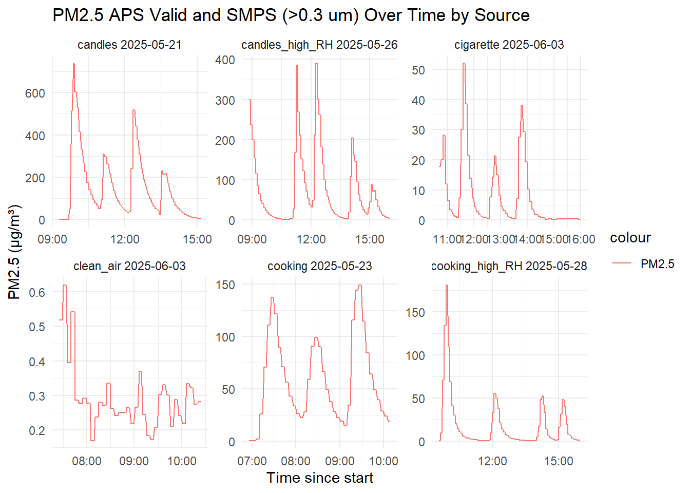
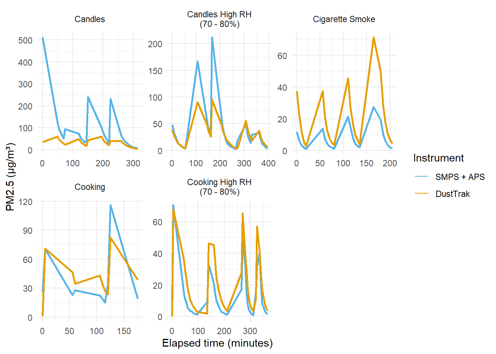

source(here("scripts", "functions_main_analysis.R"))Workflow
This workflow quarto document is for the study regarding validation of the ARMIE sensor node.
all_data_reference <- load_and_bind_rda(c(
"candles20250521.rda",
# "clean_air20250522.rda",
"cooking20250523.rda",
"candles_high_RH20250526.rda",
"cooking_high_RH20250528.rda",
"cigarette20250603.rda",
"clean_air20250603.rda"
))
# Few observations are missing the "source" variable, we remove these
all_data_reference <- all_data_reference |>
filter(!is.na(source)) |>
filter(!is.na(PM1_SMPS_SPS30)) |> # remove rows with missing PM1_SMPS_SPS30 values
select(
timestamp_rounded_1min, timestamp_rounded_5min, source, chamber_RH, chamber_temp,
PM1_SMPS, PM1_SMPS_SPS30, PN25_APS_valid,
PM1_APS_valid, PM25_APS_valid,
PM25_dusttrak,
PN1_SMPS_SPS30, PN25_APS_valid
) |>
distinct(timestamp_rounded_1min, .keep_all = TRUE) # this is implemented to remove duplicate timestamps, which are likely due to the merging of multiple datasets with different time resolutions
# Print a summary of missing values in the reference data
print(all_data_reference |> summarise(across(everything(), ~ sum(is.na(.)))) |>
pivot_longer(everything(), names_to = "variable", values_to = "missing_count") |>
arrange(desc(missing_count)))# A tibble: 12 × 2
variable missing_count
<chr> <int>
1 PN25_APS_valid 18
2 PM1_APS_valid 18
3 PM25_APS_valid 18
4 timestamp_rounded_1min 0
5 timestamp_rounded_5min 0
6 source 0
7 chamber_RH 0
8 chamber_temp 0
9 PM1_SMPS 0
10 PM1_SMPS_SPS30 0
11 PM25_dusttrak 0
12 PN1_SMPS_SPS30 0# Read low cost sensor (LCS) data
source(here::here("scripts", "read_sensor_data.R"))
# generate a timestamp rounded to the nearest minute for merging. And select variables of interest
all_data_LCS <- all_data_LCS |>
mutate(timestamp_rounded_1min = lubridate::floor_date(timestamp, unit = "minute")) |>
select(timestamp_rounded_1min, timestamp_rounded_5min, sensor, SPS30_PM1, SPS30_PM2.5, SHTC3Ext_T, SHTC3Ext_RH, SHTC3_T, SHTC3_RH) |>
filter(sensor != 0) # Sensor 0 is not working properly, we remove it
# print a summary of missing values in the LCS data
print(all_data_LCS |> summarise(across(everything(), ~ sum(is.na(.)))) |>
pivot_longer(everything(), names_to = "variable", values_to = "missing_count") |>
arrange(desc(missing_count)))# A tibble: 9 × 2
variable missing_count
<chr> <int>
1 SHTC3Ext_T 4036
2 SHTC3Ext_RH 4036
3 timestamp_rounded_1min 0
4 timestamp_rounded_5min 0
5 sensor 0
6 SPS30_PM1 0
7 SPS30_PM2.5 0
8 SHTC3_T 0
9 SHTC3_RH 0# Aggregate reference data to 5-minute means
all_data_reference_5min <- all_data_reference |>
group_by(timestamp_rounded_5min, source) |>
summarise(across(where(is.numeric), mean, na.rm = TRUE), .groups = "drop")
# Merge the aggregated reference data with LCS data
all_data <- all_data_reference_5min |>
left_join(all_data_LCS, by = "timestamp_rounded_5min") |>
filter(!is.na(sensor) & !is.na(PM25_APS_valid))
# Inspect the number of observations per sensor
all_data |>
count(sensor) |>
mutate(
(hours <- n * 5 / 60)
) |> # hours recorded per sensor
arrange(desc(n)) |>
print(n = Inf)# A tibble: 9 × 3
sensor n `(hours <- n * 5/60)`
<dbl> <int> <dbl>
1 5 366 30.5
2 8 365 30.4
3 9 365 30.4
4 2 363 30.2
5 3 357 29.8
6 6 352 29.3
7 7 352 29.3
8 4 334 27.8
9 1 322 26.8# inspect the number of observations per sensor per exposure source:
all_data |>
count(sensor, source) |>
mutate(
(hours <- n * 5 / 60)
) |> # hours recorded per sensor
arrange(source, n) |>
print(n = Inf)# A tibble: 54 × 4
sensor source n `(hours <- n * 5/60)`
<dbl> <chr> <int> <dbl>
1 1 candles 27 2.25
2 4 candles 40 3.33
3 2 candles 71 5.92
4 3 candles 71 5.92
5 5 candles 71 5.92
6 6 candles 71 5.92
7 7 candles 71 5.92
8 8 candles 71 5.92
9 9 candles 71 5.92
10 6 candles_high_RH 65 5.42
11 7 candles_high_RH 65 5.42
12 3 candles_high_RH 70 5.83
13 2 candles_high_RH 76 6.33
14 4 candles_high_RH 78 6.5
15 8 candles_high_RH 78 6.5
16 9 candles_high_RH 78 6.5
17 5 candles_high_RH 79 6.58
18 1 candles_high_RH 80 6.67
19 1 cigarette 64 5.33
20 2 cigarette 64 5.33
21 3 cigarette 64 5.33
22 4 cigarette 64 5.33
23 5 cigarette 64 5.33
24 6 cigarette 64 5.33
25 7 cigarette 64 5.33
26 8 cigarette 64 5.33
27 9 cigarette 64 5.33
28 1 clean_air 35 2.92
29 2 clean_air 36 3
30 3 clean_air 36 3
31 4 clean_air 36 3
32 5 clean_air 36 3
33 6 clean_air 36 3
34 7 clean_air 36 3
35 8 clean_air 36 3
36 9 clean_air 36 3
37 1 cooking 39 3.25
38 2 cooking 39 3.25
39 3 cooking 39 3.25
40 4 cooking 39 3.25
41 5 cooking 39 3.25
42 6 cooking 39 3.25
43 7 cooking 39 3.25
44 8 cooking 39 3.25
45 9 cooking 39 3.25
46 1 cooking_high_RH 77 6.42
47 2 cooking_high_RH 77 6.42
48 3 cooking_high_RH 77 6.42
49 4 cooking_high_RH 77 6.42
50 5 cooking_high_RH 77 6.42
51 6 cooking_high_RH 77 6.42
52 7 cooking_high_RH 77 6.42
53 8 cooking_high_RH 77 6.42
54 9 cooking_high_RH 77 6.42# Generate a long table with information on missingness
print(
all_data |> summarise(across(everything(), ~ sum(is.na(.)))) |> # Summarise missing values for each column
pivot_longer(everything(), names_to = "variable", values_to = "missing_count") |> # Pivot to long format
arrange(desc(missing_count)) # Print the summary sorted by missing count
)# A tibble: 19 × 2
variable missing_count
<chr> <int>
1 SHTC3Ext_T 352
2 SHTC3Ext_RH 352
3 timestamp_rounded_5min 0
4 source 0
5 chamber_RH 0
6 chamber_temp 0
7 PM1_SMPS 0
8 PM1_SMPS_SPS30 0
9 PN25_APS_valid 0
10 PM1_APS_valid 0
11 PM25_APS_valid 0
12 PM25_dusttrak 0
13 PN1_SMPS_SPS30 0
14 timestamp_rounded_1min 0
15 sensor 0
16 SPS30_PM1 0
17 SPS30_PM2.5 0
18 SHTC3_T 0
19 SHTC3_RH 0# save the df as .csv
write_csv(all_data, here::here("clean_data", "all_data_main_analysis.csv"))library(labelled)
# Add labels
var_label(all_data$timestamp_rounded_1min) <- "Measurement timestamp (rounded to 1 minute, UTC)"
var_label(all_data$timestamp_rounded_5min) <- "Measurement timestamp (rounded to 5 minutes, UTC)"
var_label(all_data$source) <- "Pollution source during chamber experiment"
var_label(all_data$chamber_RH) <- "Chamber relative humidity [%]"
var_label(all_data$chamber_temp) <- "Chamber temperature [°C]"
var_label(all_data$PM1_SMPS) <- "PM1 from SMPS [µg/m³]"
var_label(all_data$PM1_SMPS_SPS30) <- "PM1 from SMPS scaled to SPS30 [µg/m³]"
var_label(all_data$PM1_APS_valid) <- "PM1 from APS (valid data only) [µg/m³]"
var_label(all_data$PM25_APS_valid) <- "PM2.5 from APS (valid data only) [µg/m³]"
var_label(all_data$PM25_dusttrak) <- "PM2.5 from DustTrak [mg/m³]" # still mg/m³!
var_label(all_data$sensor) <- "Low-cost sensor ID (numeric)"
var_label(all_data$SPS30_PM1) <- "PM1 from SPS30 [µg/m³]"
var_label(all_data$SPS30_PM2.5) <- "PM2.5 from SPS30 [µg/m³]"
var_label(all_data$SHTC3Ext_T) <- "Sensor node external temperature from SHTC3 [°C]"
var_label(all_data$SHTC3Ext_RH) <- "Sensor node external relative humidity from SHTC3 [%]"
var_label(all_data$SHTC3_T) <- "Sensor node internal temperature from SHTC3 [°C]"
var_label(all_data$SHTC3_RH) <- "Sensor node internal relative humidity from SHTC3 [%]"
save(all_data, file = here::here("clean_data", "all_data_main_analysis.rda"))This section will investigate all metrics based on the raw measurements from the SPS30, without any calibration. First the SMPS data truncated at a lower limit of 0.3 um and A
all_data_ref <- make_reference_pm25(
all_data,
ref_col = "PM2.5_ref",
ref_measurements = PM1_SMPS_SPS30 + PM25_APS_valid,
reference = "SMPS + APS"
)
all_data_ref |>
group_by(source) |>
summarise(min = min(PM2.5_ref), max = max(PM2.5_ref), mean = mean(PM2.5_ref), median = median(PM2.5_ref), n = n())# A tibble: 6 × 6
source min max mean median n
<chr> <dbl> <dbl> <dbl> <dbl> <int>
1 candles 0.377 739. 152. 93.2 564
2 candles_high_RH 1.58 390. 74.8 33.1 669
3 cigarette 0.226 52.0 7.96 2.03 576
4 clean_air 0.169 0.620 0.293 0.276 323
5 cooking 0.360 149. 58.7 49.2 351
6 cooking_high_RH 0.210 181. 17.6 4.24 693dat <- prepare_for_modeling(all_data_ref, ref_col = "PM2.5_ref")
# Quick glimpse
dplyr::glimpse(dat)Rows: 3,176
Columns: 21
$ timestamp_rounded_5min <dttm> 2025-05-21 09:15:00, 2025-05-21 09:15:00, 2025…
$ source <chr> "candles", "candles", "candles", "candles", "ca…
$ chamber_RH <dbl> 40, 40, 40, 40, 40, 40, 40, 40, 40, 40, 40, 40,…
$ chamber_temp <dbl> 20, 20, 20, 20, 20, 20, 20, 20, 20, 20, 20, 20,…
$ PM1_SMPS <dbl> 0.6800615, 0.6800615, 0.6800615, 0.6800615, 0.6…
$ PM1_SMPS_SPS30 <dbl> 0.3274576, 0.3274576, 0.3274576, 0.3274576, 0.3…
$ PN25_APS_valid <dbl> 0.702, 0.702, 0.702, 0.702, 0.702, 0.702, 0.702…
$ PM1_APS_valid <dbl> 0.11270761, 0.11270761, 0.11270761, 0.11270761,…
$ PM25_APS_valid <dbl> 0.8181032, 0.8181032, 0.8181032, 0.8181032, 0.8…
$ PM25_dusttrak <dbl> 0.001, 0.001, 0.001, 0.001, 0.001, 0.001, 0.001…
$ PN1_SMPS_SPS30 <dbl> 6.675485, 6.675485, 6.675485, 6.675485, 6.67548…
$ timestamp_rounded_1min <dttm> 2025-05-21 09:17:00, 2025-05-21 09:17:00, 2025…
$ sensor <dbl> 3, 6, 2, 8, 4, 5, 7, 9, 3, 6, 2, 8, 1, 5, 7, 9,…
$ SPS30_PM1 <dbl> 0.9724859, 0.7738085, 0.9022443, 0.8344799, 0.6…
$ SPS30_PM2.5 <dbl> 1.0283664, 0.9080031, 0.9540890, 0.8824306, 0.7…
$ SHTC3Ext_T <dbl> 23.48619, 22.29649, 23.43557, 22.99753, 23.0226…
$ SHTC3Ext_RH <dbl> 36.16272, 35.34592, 33.07977, 37.33382, 35.6413…
$ SHTC3_T <dbl> 27.35400, 25.97600, 27.75733, 26.49133, 27.2893…
$ SHTC3_RH <dbl> 29.66133, 34.23666, 31.22000, 27.79000, 31.7493…
$ PM2.5_ref <dbl> 1.1455608, 1.1455608, 1.1455608, 1.1455608, 1.1…
$ reference <chr> "SMPS + APS", "SMPS + APS", "SMPS + APS", "SMPS…loso_sens_SMPS_APS_raw <- loso_by_sensor(dat, ref_col = "PM2.5_ref", method = "raw")
loso_sens_SMPS_APS_raw$per_sensor %>% arrange(desc(R))# A tibble: 9 × 14
holdout_sensor n R R2 MAE RMSE cv MeanError MeanErrorPct
<dbl> <int> <dbl> <dbl> <dbl> <dbl> <dbl> <dbl> <dbl>
1 1 322 0.665 0.442 26.6 54.7 13.6 4.03 102.
2 4 334 0.648 0.419 32.3 70.6 -10.3 -6.80 79.9
3 8 365 0.631 0.398 37.6 78.9 -12.0 -6.57 102.
4 3 357 0.631 0.398 38.0 79.6 -14.2 -5.58 103.
5 7 352 0.628 0.395 39.6 80.5 -9.23 -8.68 108.
6 9 365 0.624 0.390 37.6 78.2 -10.6 -7.38 93.1
7 6 352 0.624 0.390 34.1 77.4 -8.94 -8.61 71.0
8 5 366 0.624 0.389 36.9 79.4 -9.34 -8.47 88.4
9 2 363 0.611 0.373 38.7 81.6 -6.47 -12.5 84.0
# ℹ 5 more variables: mean_sps30 <dbl>, mean_ref <dbl>, LoA_Low <dbl>,
# LoA_High <dbl>, method <chr>loso_sens_SMPS_APS_raw$per_sensor# A tibble: 9 × 14
holdout_sensor n R R2 MAE RMSE cv MeanError MeanErrorPct
<dbl> <int> <dbl> <dbl> <dbl> <dbl> <dbl> <dbl> <dbl>
1 1 322 0.665 0.442 26.6 54.7 13.6 4.03 102.
2 2 363 0.611 0.373 38.7 81.6 -6.47 -12.5 84.0
3 3 357 0.631 0.398 38.0 79.6 -14.2 -5.58 103.
4 4 334 0.648 0.419 32.3 70.6 -10.3 -6.80 79.9
5 5 366 0.624 0.389 36.9 79.4 -9.34 -8.47 88.4
6 6 352 0.624 0.390 34.1 77.4 -8.94 -8.61 71.0
7 7 352 0.628 0.395 39.6 80.5 -9.23 -8.68 108.
8 8 365 0.631 0.398 37.6 78.9 -12.0 -6.57 102.
9 9 365 0.624 0.390 37.6 78.2 -10.6 -7.38 93.1
# ℹ 5 more variables: mean_sps30 <dbl>, mean_ref <dbl>, LoA_Low <dbl>,
# LoA_High <dbl>, method <chr>p_scatter <- plot_scatter(loso_sens_SMPS_APS_raw$predictions,
ref_col = "PM2.5_ref", pred_col = "PM2.5_pred",
title = "LOSO by Sensor: Calibrated SPS30 vs Reference (log-log)",
facet_factor = "holdout_sensor"
)
p_resid <- plot_residuals_vs_rh(loso_sens_SMPS_APS_raw$predictions,
ref_col = "PM2.5_ref", pred_col = "PM2.5_pred",
title = "LOSO by Sensor: Residuals vs RH",
facet_factor = "holdout_sensor"
) # Sensor 145 did not have the external RH sensor working
p_ba <- plot_bland_altman(loso_sens_SMPS_APS_raw$predictions,
ref_col = "PM2.5_ref", pred_col = "PM2.5_pred",
title = "LOSO by Sensor: Bland–Altman ",
facet_factor = "holdout_sensor"
)
p_scatter
p_resid
p_ba
loso_src_SMPS_APS_raw <- loso_by_source(dat, ref_col = "PM2.5_ref", method = "raw")
loso_src_SMPS_APS_raw$per_source %>% arrange(desc(R))# A tibble: 6 × 14
holdout_source n R R2 MAE RMSE cv MeanError MeanErrorPct
<chr> <int> <dbl> <dbl> <dbl> <dbl> <dbl> <dbl> <dbl>
1 cooking_high_… 693 0.944 0.891 16.8 27.4 1.46 15.5 206.
2 cooking 351 0.933 0.871 60.0 74.5 0.825 57.5 95.6
3 cigarette 576 0.884 0.781 19.6 38.4 1.83 18.5 201.
4 candles_high_… 669 0.813 0.661 29.1 61.6 -3.00 -19.5 21.0
5 candles 564 0.801 0.642 89.3 150. -1.35 -89.2 -42.3
6 clean_air 323 0.245 0.0598 0.128 0.195 2.20 0.0807 34.5
# ℹ 5 more variables: mean_sps30 <dbl>, mean_ref <dbl>, LoA_Low <dbl>,
# LoA_High <dbl>, method <chr>p_scatter_src <- plot_scatter(loso_src_SMPS_APS_raw$predictions,
ref_col = "PM2.5_ref", pred_col = "PM2.5_pred",
title = "LOSO by Source: Calibrated SPS30 vs Reference",
facet_factor = "source"
)
p_resid_src <- plot_residuals_vs_rh(loso_src_SMPS_APS_raw$predictions,
ref_col = "PM2.5_ref", pred_col = "PM2.5_pred",
title = "LOSO by Source: Residuals vs RH",
facet_factor = "source"
)
p_ba_src <- plot_bland_altman(loso_src_SMPS_APS_raw$predictions,
ref_col = "PM2.5_ref", pred_col = "PM2.5_pred",
title = "LOSO by Source: Bland–Altman",
facet_factor = "source"
)
p_scatter_src
p_resid_src
p_ba_src
loso_sens_SMPS_APS_raw$per_sensor %>%
select(
holdout_sensor, n, R, R2, MAE, RMSE, cv,
MeanError, MeanErrorPct, mean_ref, LoA_Low, LoA_High
) %>%
arrange(holdout_sensor)# A tibble: 9 × 12
holdout_sensor n R R2 MAE RMSE cv MeanError MeanErrorPct
<dbl> <int> <dbl> <dbl> <dbl> <dbl> <dbl> <dbl> <dbl>
1 1 322 0.665 0.442 26.6 54.7 13.6 4.03 102.
2 2 363 0.611 0.373 38.7 81.6 -6.47 -12.5 84.0
3 3 357 0.631 0.398 38.0 79.6 -14.2 -5.58 103.
4 4 334 0.648 0.419 32.3 70.6 -10.3 -6.80 79.9
5 5 366 0.624 0.389 36.9 79.4 -9.34 -8.47 88.4
6 6 352 0.624 0.390 34.1 77.4 -8.94 -8.61 71.0
7 7 352 0.628 0.395 39.6 80.5 -9.23 -8.68 108.
8 8 365 0.631 0.398 37.6 78.9 -12.0 -6.57 102.
9 9 365 0.624 0.390 37.6 78.2 -10.6 -7.38 93.1
# ℹ 3 more variables: mean_ref <dbl>, LoA_Low <dbl>, LoA_High <dbl>loso_src_SMPS_APS_raw$per_source %>%
select(
holdout_source, n, R, R2, MAE, RMSE, cv,
MeanError, MeanErrorPct, mean_ref, LoA_Low, LoA_High
) %>%
arrange(holdout_source)# A tibble: 6 × 12
holdout_source n R R2 MAE RMSE cv MeanError MeanErrorPct
<chr> <int> <dbl> <dbl> <dbl> <dbl> <dbl> <dbl> <dbl>
1 candles 564 0.801 0.642 89.3 150. -1.35 -89.2 -42.3
2 candles_high_… 669 0.813 0.661 29.1 61.6 -3.00 -19.5 21.0
3 cigarette 576 0.884 0.781 19.6 38.4 1.83 18.5 201.
4 clean_air 323 0.245 0.0598 0.128 0.195 2.20 0.0807 34.5
5 cooking 351 0.933 0.871 60.0 74.5 0.825 57.5 95.6
6 cooking_high_… 693 0.944 0.891 16.8 27.4 1.46 15.5 206.
# ℹ 3 more variables: mean_ref <dbl>, LoA_Low <dbl>, LoA_High <dbl>This section uses data from the SMPS and APS as reference, as these are the most accurate instruments available in the chamber. And calibrated measurements from the SPS30. The SMPS is truncated to include bins >0.3 um. This is done to align the measurements to the claim arange for the SPS30.
all_data_reference |>
mutate(source_day = paste(source, as.Date(timestamp_rounded_1min))) |>
ggplot() +
geom_line(aes(x = timestamp_rounded_1min, y = (PM1_SMPS_SPS30 + PM25_APS_valid), color = "PM2.5")) +
facet_wrap(~source_day, scales = "free") +
labs(
title = "PM2.5 APS Valid and SMPS (>0.3 um) Over Time by Source",
x = "Time since start",
y = "PM2.5 (µg/m³)"
) +
theme_minimal()Warning: Removed 3 rows containing missing values or values outside the scale range
(`geom_line()`).
all_data_ref <- make_reference_pm25(
all_data,
ref_col = "PM2.5_ref",
ref_measurements = PM1_SMPS_SPS30 + PM25_APS_valid,
reference = "SMPS + APS"
)
all_data_ref |>
group_by(source) |>
summarise(min = min(PM2.5_ref), max = max(PM2.5_ref), mean = mean(PM2.5_ref), median = median(PM2.5_ref), n = n())# A tibble: 6 × 6
source min max mean median n
<chr> <dbl> <dbl> <dbl> <dbl> <int>
1 candles 0.377 739. 152. 93.2 564
2 candles_high_RH 1.58 390. 74.8 33.1 669
3 cigarette 0.226 52.0 7.96 2.03 576
4 clean_air 0.169 0.620 0.293 0.276 323
5 cooking 0.360 149. 58.7 49.2 351
6 cooking_high_RH 0.210 181. 17.6 4.24 693dat <- prepare_for_modeling(all_data_ref, ref_col = "PM2.5_ref")
# Quick glimpse
dplyr::glimpse(dat)Rows: 3,176
Columns: 21
$ timestamp_rounded_5min <dttm> 2025-05-21 09:15:00, 2025-05-21 09:15:00, 2025…
$ source <chr> "candles", "candles", "candles", "candles", "ca…
$ chamber_RH <dbl> 40, 40, 40, 40, 40, 40, 40, 40, 40, 40, 40, 40,…
$ chamber_temp <dbl> 20, 20, 20, 20, 20, 20, 20, 20, 20, 20, 20, 20,…
$ PM1_SMPS <dbl> 0.6800615, 0.6800615, 0.6800615, 0.6800615, 0.6…
$ PM1_SMPS_SPS30 <dbl> 0.3274576, 0.3274576, 0.3274576, 0.3274576, 0.3…
$ PN25_APS_valid <dbl> 0.702, 0.702, 0.702, 0.702, 0.702, 0.702, 0.702…
$ PM1_APS_valid <dbl> 0.11270761, 0.11270761, 0.11270761, 0.11270761,…
$ PM25_APS_valid <dbl> 0.8181032, 0.8181032, 0.8181032, 0.8181032, 0.8…
$ PM25_dusttrak <dbl> 0.001, 0.001, 0.001, 0.001, 0.001, 0.001, 0.001…
$ PN1_SMPS_SPS30 <dbl> 6.675485, 6.675485, 6.675485, 6.675485, 6.67548…
$ timestamp_rounded_1min <dttm> 2025-05-21 09:17:00, 2025-05-21 09:17:00, 2025…
$ sensor <dbl> 3, 6, 2, 8, 4, 5, 7, 9, 3, 6, 2, 8, 1, 5, 7, 9,…
$ SPS30_PM1 <dbl> 0.9724859, 0.7738085, 0.9022443, 0.8344799, 0.6…
$ SPS30_PM2.5 <dbl> 1.0283664, 0.9080031, 0.9540890, 0.8824306, 0.7…
$ SHTC3Ext_T <dbl> 23.48619, 22.29649, 23.43557, 22.99753, 23.0226…
$ SHTC3Ext_RH <dbl> 36.16272, 35.34592, 33.07977, 37.33382, 35.6413…
$ SHTC3_T <dbl> 27.35400, 25.97600, 27.75733, 26.49133, 27.2893…
$ SHTC3_RH <dbl> 29.66133, 34.23666, 31.22000, 27.79000, 31.7493…
$ PM2.5_ref <dbl> 1.1455608, 1.1455608, 1.1455608, 1.1455608, 1.1…
$ reference <chr> "SMPS + APS", "SMPS + APS", "SMPS + APS", "SMPS…loso_sens_SMPS_APS_lm <- loso_by_sensor(dat, ref_col = "PM2.5_ref", method = "lm")
loso_sens_SMPS_APS_lm$per_sensor %>% arrange(desc(n))# A tibble: 9 × 14
holdout_sensor n R R2 MAE RMSE cv MeanError MeanErrorPct
<dbl> <int> <dbl> <dbl> <dbl> <dbl> <dbl> <dbl> <dbl>
1 5 366 0.629 0.396 38.6 78.6 -20.3 -3.87 658.
2 8 365 0.636 0.404 40.9 78.3 41.6 1.88 959.
3 9 365 0.630 0.397 40.8 77.4 56.6 1.37 970.
4 2 363 0.617 0.381 40.7 80.4 -12.3 -6.53 751.
5 3 357 0.636 0.405 41.2 79.0 32.9 2.40 886.
6 6 352 0.629 0.395 36.4 76.6 -27.1 -2.83 740.
7 7 352 0.633 0.401 42.8 79.6 -1770. -0.0451 1006.
8 4 334 0.647 0.419 35.5 70.3 -48.9 -1.44 807.
9 1 322 0.655 0.430 30.3 56.6 5.62 9.93 847.
# ℹ 5 more variables: mean_sps30 <dbl>, mean_ref <dbl>, LoA_Low <dbl>,
# LoA_High <dbl>, method <chr>p_scatter <- plot_scatter(loso_sens_SMPS_APS_lm$predictions,
ref_col = "PM2.5_ref", pred_col = "PM2.5_pred",
title = "LOSO by Sensor: Calibrated SPS30 vs Reference (log-log)",
facet_factor = "holdout_sensor"
)
p_resid <- plot_residuals_vs_rh(loso_sens_SMPS_APS_lm$predictions,
ref_col = "PM2.5_ref", pred_col = "PM2.5_pred",
title = "LOSO by Sensor: Residuals vs RH",
facet_factor = "holdout_sensor"
) # Sensor 145 did not have the external RH sensor working
p_ba <- plot_bland_altman(loso_sens_SMPS_APS_lm$predictions,
ref_col = "PM2.5_ref", pred_col = "PM2.5_pred",
title = "LOSO by Sensor: Bland–Altman ",
facet_factor = "holdout_sensor"
)
p_scatter
p_resid
p_ba
loso_src_SMPS_APS_lm <- loso_by_source(dat, ref_col = "PM2.5_ref", method = "lm")
loso_src_SMPS_APS_lm$per_source %>% arrange(desc(n))# A tibble: 6 × 14
holdout_source n R R2 MAE RMSE cv MeanError MeanErrorPct
<chr> <int> <dbl> <dbl> <dbl> <dbl> <dbl> <dbl> <dbl>
1 cooking_high_RH 693 0.944 0.891 28.2 37.3 0.888 27.9 937.
2 candles_high_RH 669 0.828 0.686 36.2 68.8 -1.79 -33.6 -45.1
3 cigarette 576 0.882 0.778 42.3 54.9 0.828 42.3 2656.
4 candles 564 0.800 0.640 115. 175. -1.15 -115. -78.4
5 cooking 351 0.929 0.864 121. 146. 0.680 121. 430.
6 clean_air 323 0.188 0.0353 17.0 17.1 0.111 17.0 6242.
# ℹ 5 more variables: mean_sps30 <dbl>, mean_ref <dbl>, LoA_Low <dbl>,
# LoA_High <dbl>, method <chr>p_scatter_src <- plot_scatter(loso_src_SMPS_APS_lm$predictions,
ref_col = "PM2.5_ref", pred_col = "PM2.5_pred",
title = "LOSO by Source: Calibrated SPS30 vs Reference",
facet_factor = "source"
)
p_resid_src <- plot_residuals_vs_rh(loso_src_SMPS_APS_lm$predictions,
ref_col = "PM2.5_ref", pred_col = "PM2.5_pred",
title = "LOSO by Source: Residuals vs RH",
facet_factor = "source"
)
p_ba_src <- plot_bland_altman(loso_src_SMPS_APS_lm$predictions,
ref_col = "PM2.5_ref", pred_col = "PM2.5_pred",
title = "LOSO by Source: Bland–Altman",
facet_factor = "source"
)
p_scatter_src
p_resid_src
p_ba_src
loso_sens_SMPS_APS_lm$per_sensor %>%
select(
holdout_sensor, n, R, R2, MAE, RMSE, cv,
MeanError, MeanErrorPct, mean_ref, LoA_Low, LoA_High
) %>%
arrange(holdout_sensor)# A tibble: 9 × 12
holdout_sensor n R R2 MAE RMSE cv MeanError MeanErrorPct
<dbl> <int> <dbl> <dbl> <dbl> <dbl> <dbl> <dbl> <dbl>
1 1 322 0.655 0.430 30.3 56.6 5.62 9.93 847.
2 2 363 0.617 0.381 40.7 80.4 -12.3 -6.53 751.
3 3 357 0.636 0.405 41.2 79.0 32.9 2.40 886.
4 4 334 0.647 0.419 35.5 70.3 -48.9 -1.44 807.
5 5 366 0.629 0.396 38.6 78.6 -20.3 -3.87 658.
6 6 352 0.629 0.395 36.4 76.6 -27.1 -2.83 740.
7 7 352 0.633 0.401 42.8 79.6 -1770. -0.0451 1006.
8 8 365 0.636 0.404 40.9 78.3 41.6 1.88 959.
9 9 365 0.630 0.397 40.8 77.4 56.6 1.37 970.
# ℹ 3 more variables: mean_ref <dbl>, LoA_Low <dbl>, LoA_High <dbl>loso_src_SMPS_APS_lm$per_source %>%
select(
holdout_source, n, R, R2, MAE, RMSE, cv,
MeanError, MeanErrorPct, mean_ref, LoA_Low, LoA_High
) %>%
arrange(holdout_source)# A tibble: 6 × 12
holdout_source n R R2 MAE RMSE cv MeanError MeanErrorPct
<chr> <int> <dbl> <dbl> <dbl> <dbl> <dbl> <dbl> <dbl>
1 candles 564 0.800 0.640 115. 175. -1.15 -115. -78.4
2 candles_high_RH 669 0.828 0.686 36.2 68.8 -1.79 -33.6 -45.1
3 cigarette 576 0.882 0.778 42.3 54.9 0.828 42.3 2656.
4 clean_air 323 0.188 0.0353 17.0 17.1 0.111 17.0 6242.
5 cooking 351 0.929 0.864 121. 146. 0.680 121. 430.
6 cooking_high_RH 693 0.944 0.891 28.2 37.3 0.888 27.9 937.
# ℹ 3 more variables: mean_ref <dbl>, LoA_Low <dbl>, LoA_High <dbl>This section uses the data from the Dusttrak as reference. And raw measurements from the SPS30.
all_data_reference |>
mutate(source_day = paste(source, as.Date(timestamp_rounded_1min))) |>
ggplot() +
geom_line(aes(x = timestamp_rounded_1min, y = (PM25_dusttrak * 1000), color = "PM2.5")) +
facet_wrap(~source_day, scales = "free") +
labs(
title = "PM2.5 Dusttrak Over Time by Source",
x = "Time since start",
y = "PM2.5 (µg/m³)"
) +
theme_minimal()
all_data_ref <- make_reference_pm25(all_data,
ref_col = "PM2.5_ref",
ref_measurements = PM25_dusttrak * 1000, # Dusttrak is in mg/m3, convert to ug/m3
reference = "Dusttrak"
)
all_data_ref |>
group_by(source) |>
summarise(min = min(PM2.5_ref), max = max(PM2.5_ref), mean = mean(PM2.5_ref), median = median(PM2.5_ref), n = n())# A tibble: 6 × 6
source min max mean median n
<chr> <dbl> <dbl> <dbl> <dbl> <int>
1 candles 0 238. 65.0 47.3 564
2 candles_high_RH 0.5 202 47.2 32.5 669
3 cigarette 0 132 19.7 3.25 576
4 clean_air 0 0 0 0 323
5 cooking 0 263 94.2 75.3 351
6 cooking_high_RH 0 206. 26.7 10 693dat <- prepare_for_modeling(all_data_ref, ref_col = "PM2.5_ref")
# Quick glimpse
dplyr::glimpse(dat)Rows: 3,176
Columns: 21
$ timestamp_rounded_5min <dttm> 2025-05-21 09:15:00, 2025-05-21 09:15:00, 2025…
$ source <chr> "candles", "candles", "candles", "candles", "ca…
$ chamber_RH <dbl> 40, 40, 40, 40, 40, 40, 40, 40, 40, 40, 40, 40,…
$ chamber_temp <dbl> 20, 20, 20, 20, 20, 20, 20, 20, 20, 20, 20, 20,…
$ PM1_SMPS <dbl> 0.6800615, 0.6800615, 0.6800615, 0.6800615, 0.6…
$ PM1_SMPS_SPS30 <dbl> 0.3274576, 0.3274576, 0.3274576, 0.3274576, 0.3…
$ PN25_APS_valid <dbl> 0.702, 0.702, 0.702, 0.702, 0.702, 0.702, 0.702…
$ PM1_APS_valid <dbl> 0.11270761, 0.11270761, 0.11270761, 0.11270761,…
$ PM25_APS_valid <dbl> 0.8181032, 0.8181032, 0.8181032, 0.8181032, 0.8…
$ PM25_dusttrak <dbl> 0.001, 0.001, 0.001, 0.001, 0.001, 0.001, 0.001…
$ PN1_SMPS_SPS30 <dbl> 6.675485, 6.675485, 6.675485, 6.675485, 6.67548…
$ timestamp_rounded_1min <dttm> 2025-05-21 09:17:00, 2025-05-21 09:17:00, 2025…
$ sensor <dbl> 3, 6, 2, 8, 4, 5, 7, 9, 3, 6, 2, 8, 1, 5, 7, 9,…
$ SPS30_PM1 <dbl> 0.9724859, 0.7738085, 0.9022443, 0.8344799, 0.6…
$ SPS30_PM2.5 <dbl> 1.0283664, 0.9080031, 0.9540890, 0.8824306, 0.7…
$ SHTC3Ext_T <dbl> 23.48619, 22.29649, 23.43557, 22.99753, 23.0226…
$ SHTC3Ext_RH <dbl> 36.16272, 35.34592, 33.07977, 37.33382, 35.6413…
$ SHTC3_T <dbl> 27.35400, 25.97600, 27.75733, 26.49133, 27.2893…
$ SHTC3_RH <dbl> 29.66133, 34.23666, 31.22000, 27.79000, 31.7493…
$ PM2.5_ref <dbl> 1, 1, 1, 1, 1, 1, 1, 1, 1, 1, 1, 1, 1, 1, 1, 1,…
$ reference <chr> "Dusttrak", "Dusttrak", "Dusttrak", "Dusttrak",…loso_sens_dusttrak_raw <- loso_by_sensor(dat, ref_col = "PM2.5_ref", method = "raw")
loso_sens_dusttrak_raw$per_sensor %>% arrange(desc(n))# A tibble: 9 × 14
holdout_sensor n R R2 MAE RMSE cv MeanError MeanErrorPct
<dbl> <int> <dbl> <dbl> <dbl> <dbl> <dbl> <dbl> <dbl>
1 5 366 0.967 0.934 8.59 17.5 2.44 6.63 10952.
2 8 365 0.974 0.949 11.2 19.5 1.99 8.77 12377.
3 9 365 0.968 0.937 8.97 18.8 2.36 7.35 11604.
4 2 363 0.954 0.911 9.42 17.0 5.81 2.88 9704.
5 3 357 0.959 0.920 10.9 22.6 2.09 9.76 10874.
6 6 352 0.962 0.926 6.47 16.6 3.71 4.32 11639.
7 7 352 0.976 0.952 9.50 17.1 2.16 7.19 14238.
8 4 334 0.962 0.926 8.22 16.2 5.40 2.94 11432.
9 1 322 0.984 0.968 8.93 15.7 1.93 7.23 11296.
# ℹ 5 more variables: mean_sps30 <dbl>, mean_ref <dbl>, LoA_Low <dbl>,
# LoA_High <dbl>, method <chr>p_scatter <- plot_scatter(loso_sens_dusttrak_raw$predictions,
ref_col = "PM2.5_ref", pred_col = "PM2.5_pred",
title = "LOSO by Sensor: Calibrated SPS30 vs Reference (log-log)",
facet_factor = "holdout_sensor"
)
p_resid <- plot_residuals_vs_rh(loso_sens_dusttrak_raw$predictions,
ref_col = "PM2.5_ref", pred_col = "PM2.5_pred",
title = "LOSO by Sensor: Residuals vs RH",
facet_factor = "holdout_sensor"
) # Sensor 145 did not have the external RH sensor working
p_ba <- plot_bland_altman(loso_sens_dusttrak_raw$predictions,
ref_col = "PM2.5_ref", pred_col = "PM2.5_pred",
title = "LOSO by Sensor: Bland–Altman ",
facet_factor = "holdout_sensor"
)
p_scatter
p_resid
p_ba
loso_src_dusttrak_raw <- loso_by_source(dat, ref_col = "PM2.5_ref", method = "raw")Warning in cor(x, y_safe): the standard deviation is zeroloso_src_dusttrak_raw$per_source %>% arrange(desc(n))# A tibble: 6 × 14
holdout_source n R R2 MAE RMSE cv MeanError MeanErrorPct
<chr> <int> <dbl> <dbl> <dbl> <dbl> <dbl> <dbl> <dbl>
1 cooking_high_… 693 0.980 0.960 7.85 14.7 2.05 6.45 7962.
2 candles_high_… 669 0.942 0.887 10.7 19.9 2.23 8.18 29.9
3 cigarette 576 0.975 0.950 6.90 15.3 2.06 6.70 26574.
4 candles 564 0.979 0.958 7.59 12.3 -4.69 -2.56 4179.
5 cooking 351 0.964 0.930 23.1 33.6 1.15 22.0 4236.
6 clean_air 323 NA NA 0.373 0.412 0.469 0.373 37284.
# ℹ 5 more variables: mean_sps30 <dbl>, mean_ref <dbl>, LoA_Low <dbl>,
# LoA_High <dbl>, method <chr>p_scatter_src <- plot_scatter(loso_src_dusttrak_raw$predictions,
ref_col = "PM2.5_ref", pred_col = "PM2.5_pred",
title = "LOSO by Source: Calibrated SPS30 vs Reference",
facet_factor = "source"
)
p_resid_src <- plot_residuals_vs_rh(loso_src_dusttrak_raw$predictions,
ref_col = "PM2.5_ref", pred_col = "PM2.5_pred",
title = "LOSO by Source: Residuals vs RH",
facet_factor = "source"
)
p_ba_src <- plot_bland_altman(loso_src_dusttrak_raw$predictions,
ref_col = "PM2.5_ref", pred_col = "PM2.5_pred",
title = "LOSO by Source: Bland–Altman",
facet_factor = "source"
)
p_scatter_src
p_resid_src
p_ba_src
loso_sens_dusttrak_raw$per_sensor %>%
select(
holdout_sensor, n, R, R2, MAE, RMSE, cv,
MeanError, MeanErrorPct, mean_ref, LoA_Low, LoA_High
) %>%
arrange(holdout_sensor)# A tibble: 9 × 12
holdout_sensor n R R2 MAE RMSE cv MeanError MeanErrorPct
<dbl> <int> <dbl> <dbl> <dbl> <dbl> <dbl> <dbl> <dbl>
1 1 322 0.984 0.968 8.93 15.7 1.93 7.23 11296.
2 2 363 0.954 0.911 9.42 17.0 5.81 2.88 9704.
3 3 357 0.959 0.920 10.9 22.6 2.09 9.76 10874.
4 4 334 0.962 0.926 8.22 16.2 5.40 2.94 11432.
5 5 366 0.967 0.934 8.59 17.5 2.44 6.63 10952.
6 6 352 0.962 0.926 6.47 16.6 3.71 4.32 11639.
7 7 352 0.976 0.952 9.50 17.1 2.16 7.19 14238.
8 8 365 0.974 0.949 11.2 19.5 1.99 8.77 12377.
9 9 365 0.968 0.937 8.97 18.8 2.36 7.35 11604.
# ℹ 3 more variables: mean_ref <dbl>, LoA_Low <dbl>, LoA_High <dbl>loso_src_dusttrak_raw$per_source %>%
select(
holdout_source, n, R, R2, MAE, RMSE, cv,
MeanError, MeanErrorPct, mean_ref, LoA_Low, LoA_High
) %>%
arrange(holdout_source)# A tibble: 6 × 12
holdout_source n R R2 MAE RMSE cv MeanError MeanErrorPct
<chr> <int> <dbl> <dbl> <dbl> <dbl> <dbl> <dbl> <dbl>
1 candles 564 0.979 0.958 7.59 12.3 -4.69 -2.56 4179.
2 candles_high_… 669 0.942 0.887 10.7 19.9 2.23 8.18 29.9
3 cigarette 576 0.975 0.950 6.90 15.3 2.06 6.70 26574.
4 clean_air 323 NA NA 0.373 0.412 0.469 0.373 37284.
5 cooking 351 0.964 0.930 23.1 33.6 1.15 22.0 4236.
6 cooking_high_… 693 0.980 0.960 7.85 14.7 2.05 6.45 7962.
# ℹ 3 more variables: mean_ref <dbl>, LoA_Low <dbl>, LoA_High <dbl>This section uses the data from the Dusttrak as reference. And calibrated measurements from the SPS30.
all_data_ref <- make_reference_pm25(all_data,
ref_col = "PM2.5_ref",
ref_measurements = PM25_dusttrak * 1000, # Dusttrak is in mg/m3, convert to ug/m3
reference = "Dusttrak"
)
all_data_ref |>
group_by(source) |>
summarise(min = min(PM2.5_ref), max = max(PM2.5_ref), mean = mean(PM2.5_ref), median = median(PM2.5_ref), n = n())# A tibble: 6 × 6
source min max mean median n
<chr> <dbl> <dbl> <dbl> <dbl> <int>
1 candles 0 238. 65.0 47.3 564
2 candles_high_RH 0.5 202 47.2 32.5 669
3 cigarette 0 132 19.7 3.25 576
4 clean_air 0 0 0 0 323
5 cooking 0 263 94.2 75.3 351
6 cooking_high_RH 0 206. 26.7 10 693dat <- prepare_for_modeling(all_data_ref, ref_col = "PM2.5_ref")
# Quick glimpse
dplyr::glimpse(dat)Rows: 3,176
Columns: 21
$ timestamp_rounded_5min <dttm> 2025-05-21 09:15:00, 2025-05-21 09:15:00, 2025…
$ source <chr> "candles", "candles", "candles", "candles", "ca…
$ chamber_RH <dbl> 40, 40, 40, 40, 40, 40, 40, 40, 40, 40, 40, 40,…
$ chamber_temp <dbl> 20, 20, 20, 20, 20, 20, 20, 20, 20, 20, 20, 20,…
$ PM1_SMPS <dbl> 0.6800615, 0.6800615, 0.6800615, 0.6800615, 0.6…
$ PM1_SMPS_SPS30 <dbl> 0.3274576, 0.3274576, 0.3274576, 0.3274576, 0.3…
$ PN25_APS_valid <dbl> 0.702, 0.702, 0.702, 0.702, 0.702, 0.702, 0.702…
$ PM1_APS_valid <dbl> 0.11270761, 0.11270761, 0.11270761, 0.11270761,…
$ PM25_APS_valid <dbl> 0.8181032, 0.8181032, 0.8181032, 0.8181032, 0.8…
$ PM25_dusttrak <dbl> 0.001, 0.001, 0.001, 0.001, 0.001, 0.001, 0.001…
$ PN1_SMPS_SPS30 <dbl> 6.675485, 6.675485, 6.675485, 6.675485, 6.67548…
$ timestamp_rounded_1min <dttm> 2025-05-21 09:17:00, 2025-05-21 09:17:00, 2025…
$ sensor <dbl> 3, 6, 2, 8, 4, 5, 7, 9, 3, 6, 2, 8, 1, 5, 7, 9,…
$ SPS30_PM1 <dbl> 0.9724859, 0.7738085, 0.9022443, 0.8344799, 0.6…
$ SPS30_PM2.5 <dbl> 1.0283664, 0.9080031, 0.9540890, 0.8824306, 0.7…
$ SHTC3Ext_T <dbl> 23.48619, 22.29649, 23.43557, 22.99753, 23.0226…
$ SHTC3Ext_RH <dbl> 36.16272, 35.34592, 33.07977, 37.33382, 35.6413…
$ SHTC3_T <dbl> 27.35400, 25.97600, 27.75733, 26.49133, 27.2893…
$ SHTC3_RH <dbl> 29.66133, 34.23666, 31.22000, 27.79000, 31.7493…
$ PM2.5_ref <dbl> 1, 1, 1, 1, 1, 1, 1, 1, 1, 1, 1, 1, 1, 1, 1, 1,…
$ reference <chr> "Dusttrak", "Dusttrak", "Dusttrak", "Dusttrak",…loso_sens_dusttrak_lm <- loso_by_sensor(dat, ref_col = "PM2.5_ref", method = "lm")
loso_sens_dusttrak_lm$per_sensor %>% arrange(desc(n))# A tibble: 9 × 14
holdout_sensor n R R2 MAE RMSE cv MeanError MeanErrorPct
<dbl> <int> <dbl> <dbl> <dbl> <dbl> <dbl> <dbl> <dbl>
1 5 366 0.967 0.936 6.78 13.5 -35.0 -0.386 44716.
2 8 365 0.975 0.950 7.83 12.5 4.89 2.50 62508.
3 9 365 0.968 0.938 7.23 13.4 11.4 1.17 63330.
4 2 363 0.955 0.912 8.16 16.7 -4.80 -3.41 47809.
5 3 357 0.960 0.922 7.46 15.8 4.46 3.46 53757.
6 6 352 0.962 0.926 7.28 14.3 -7.89 -1.80 48945.
7 7 352 0.976 0.952 7.59 11.8 11.1 1.07 68916.
8 4 334 0.962 0.926 6.83 15.5 -4.15 -3.64 51729.
9 1 322 0.984 0.968 5.36 9.01 9.09 0.987 53675.
# ℹ 5 more variables: mean_sps30 <dbl>, mean_ref <dbl>, LoA_Low <dbl>,
# LoA_High <dbl>, method <chr>p_scatter <- plot_scatter(loso_sens_dusttrak_lm$predictions,
ref_col = "PM2.5_ref", pred_col = "PM2.5_pred",
title = "LOSO by Sensor: Calibrated SPS30 vs Reference (log-log)",
facet_factor = "holdout_sensor"
)
p_resid <- plot_residuals_vs_rh(loso_sens_dusttrak_lm$predictions,
ref_col = "PM2.5_ref", pred_col = "PM2.5_pred",
title = "LOSO by Sensor: Residuals vs RH",
facet_factor = "holdout_sensor"
) # Sensor 145 did not have the external RH sensor working
p_ba <- plot_bland_altman(loso_sens_dusttrak_lm$predictions,
ref_col = "PM2.5_ref", pred_col = "PM2.5_pred",
title = "LOSO by Sensor: Bland–Altman ",
facet_factor = "holdout_sensor"
)
p_scatter
p_resid
p_ba
loso_src_dusttrak_lm <- loso_by_source(dat, ref_col = "PM2.5_ref", method = "lm")Warning in cor(x, y_safe): the standard deviation is zeroloso_src_dusttrak_lm$per_source %>% arrange(desc(n))# A tibble: 6 × 14
holdout_source n R R2 MAE RMSE cv MeanError MeanErrorPct
<chr> <int> <dbl> <dbl> <dbl> <dbl> <dbl> <dbl> <dbl>
1 cooking_high_RH 693 0.980 0.960 4.14 8.60 9.65 0.887 4940.
2 candles_high_RH 669 0.943 0.889 6.80 15.3 -13.4 -1.14 2.55
3 cigarette 576 0.974 0.949 7.35 11.1 1.29 6.79 164583.
4 candles 564 0.979 0.958 15.9 23.3 -1.15 -15.3 3423.
5 cooking 351 0.964 0.929 13.7 22.2 1.90 10.4 27289.
6 clean_air 323 NA NA 3.78 3.80 0.120 3.78 377501.
# ℹ 5 more variables: mean_sps30 <dbl>, mean_ref <dbl>, LoA_Low <dbl>,
# LoA_High <dbl>, method <chr>p_scatter_src <- plot_scatter(loso_src_dusttrak_lm$predictions,
ref_col = "PM2.5_ref", pred_col = "PM2.5_pred",
title = "LOSO by Source: Calibrated SPS30 vs Reference",
facet_factor = "source"
)
p_resid_src <- plot_residuals_vs_rh(loso_src_dusttrak_lm$predictions,
ref_col = "PM2.5_ref", pred_col = "PM2.5_pred",
title = "LOSO by Source: Residuals vs RH",
facet_factor = "source"
)
p_ba_src <- plot_bland_altman(loso_src_dusttrak_lm$predictions,
ref_col = "PM2.5_ref", pred_col = "PM2.5_pred",
title = "LOSO by Source: Bland–Altman",
facet_factor = "source"
)
p_scatter_src
p_resid_src
p_ba_src
loso_sens_dusttrak_lm$per_sensor %>%
select(
holdout_sensor, n, R, R2, MAE, RMSE, cv,
MeanError, MeanErrorPct, mean_ref, LoA_Low, LoA_High
) %>%
arrange(holdout_sensor)# A tibble: 9 × 12
holdout_sensor n R R2 MAE RMSE cv MeanError MeanErrorPct
<dbl> <int> <dbl> <dbl> <dbl> <dbl> <dbl> <dbl> <dbl>
1 1 322 0.984 0.968 5.36 9.01 9.09 0.987 53675.
2 2 363 0.955 0.912 8.16 16.7 -4.80 -3.41 47809.
3 3 357 0.960 0.922 7.46 15.8 4.46 3.46 53757.
4 4 334 0.962 0.926 6.83 15.5 -4.15 -3.64 51729.
5 5 366 0.967 0.936 6.78 13.5 -35.0 -0.386 44716.
6 6 352 0.962 0.926 7.28 14.3 -7.89 -1.80 48945.
7 7 352 0.976 0.952 7.59 11.8 11.1 1.07 68916.
8 8 365 0.975 0.950 7.83 12.5 4.89 2.50 62508.
9 9 365 0.968 0.938 7.23 13.4 11.4 1.17 63330.
# ℹ 3 more variables: mean_ref <dbl>, LoA_Low <dbl>, LoA_High <dbl>loso_src_dusttrak_lm$per_source %>%
select(
holdout_source, n, R, R2, MAE, RMSE, cv,
MeanError, MeanErrorPct, mean_ref, LoA_Low, LoA_High
) %>%
arrange(holdout_source)# A tibble: 6 × 12
holdout_source n R R2 MAE RMSE cv MeanError MeanErrorPct
<chr> <int> <dbl> <dbl> <dbl> <dbl> <dbl> <dbl> <dbl>
1 candles 564 0.979 0.958 15.9 23.3 -1.15 -15.3 3423.
2 candles_high_RH 669 0.943 0.889 6.80 15.3 -13.4 -1.14 2.55
3 cigarette 576 0.974 0.949 7.35 11.1 1.29 6.79 164583.
4 clean_air 323 NA NA 3.78 3.80 0.120 3.78 377501.
5 cooking 351 0.964 0.929 13.7 22.2 1.90 10.4 27289.
6 cooking_high_RH 693 0.980 0.960 4.14 8.60 9.65 0.887 4940.
# ℹ 3 more variables: mean_ref <dbl>, LoA_Low <dbl>, LoA_High <dbl>#Generate a (new) table 1 with range, median, mean and SD for PM2.5 and PN2.5 concentration from SMPS+APS and PM2.5 for Dusttrak
table1_data <- all_data |>
select(
timestamp_rounded_5min, source,
PM25_dusttrak,
PM1_SMPS_SPS30, PM25_APS_valid,
PN1_SMPS_SPS30, PN25_APS_valid
) |>
mutate(
SMPS_APS_PN = PN1_SMPS_SPS30 + PN25_APS_valid, # /cm3
SMPS_APS_PM = PM1_SMPS_SPS30 + PM25_APS_valid,
Dusttrak = PM25_dusttrak * 1000
) |>
filter(Dusttrak >= 5 & SMPS_APS_PM >= 5) |> # only include values above 5 ug/m3
pivot_longer(
cols = c(Dusttrak, SMPS_APS_PN, SMPS_APS_PM),
names_to = "instrument",
values_to = "Concentration"
) |>
mutate(
instrument = fct_recode(
instrument,
"SMPS + APS (#/cm³)" = "SMPS_APS_PN",
"SMPS + APS (µg/m³)" = "SMPS_APS_PM",
"DustTrak (µg/m³)" = "Dusttrak"
),
instrument = fct_relevel(
instrument,
"SMPS + APS (#/cm³)",
"SMPS + APS (µg/m³)",
"DustTrak (µg/m³)"
),
source = fct_recode(
source,
"Candles" = "candles",
"Candles High RH\n(70 - 80%)" = "candles_high_RH",
"Cigarette Smoke" = "cigarette",
"Clean Air" = "clean_air",
"Cooking" = "cooking",
"Cooking High RH\n(70 - 80%)" = "cooking_high_RH"
)
) |>
group_by(source, instrument) |>
summarise(
mean = mean(Concentration, na.rm = TRUE),
sd = sd(Concentration, na.rm = TRUE),
median = median(Concentration, na.rm = TRUE),
min = min(Concentration, na.rm = TRUE),
max = max(Concentration, na.rm = TRUE),
.groups = "drop"
) |> mutate(across(where(is.numeric), ~ round(., 2)))Warning: There was 1 warning in `mutate()`.
ℹ In argument: `source = fct_recode(...)`.
Caused by warning:
! Unknown levels in `f`: clean_air# Generate table 1
table1_gt <- table1_data |>
select(
source, instrument, median, mean, sd, min, max
) |>
gt(groupname_col = "source") |>
tab_header(
title = "Table 1: Summary statistics of PM and PN measurements by instrument and source"
) |>
cols_label(
source = "Source",
instrument = "Instrument",
median = "Median",
mean = "Mean",
sd = "SD",
min = "Min",
max = "Max"
) |>
fmt_number(
columns = c(median, mean, sd, min, max),
decimals = 0
) |>
tab_style(
style = cell_text(weight = "bold"),
locations = cells_row_groups()
)
table1_gt| Table 1: Summary statistics of PM and PN measurements by instrument and source | |||||
|---|---|---|---|---|---|
| Instrument | Median | Mean | SD | Min | Max |
| Candles | |||||
| SMPS + APS (#/cm³) | 2,188 | 3,529 | 3,414 | 149 | 16,339 |
| SMPS + APS (µg/m³) | 110 | 170 | 161 | 7 | 739 |
| DustTrak (µg/m³) | 59 | 73 | 57 | 5 | 238 |
| Candles High RH (70 - 80%) | |||||
| SMPS + APS (#/cm³) | 1,169 | 2,008 | 2,049 | 117 | 8,774 |
| SMPS + APS (µg/m³) | 49 | 92 | 96 | 5 | 390 |
| DustTrak (µg/m³) | 48 | 58 | 45 | 6 | 202 |
| Cigarette Smoke | |||||
| SMPS + APS (#/cm³) | 306 | 383 | 246 | 101 | 863 |
| SMPS + APS (µg/m³) | 20 | 21 | 12 | 6 | 52 |
| DustTrak (µg/m³) | 48 | 58 | 35 | 17 | 132 |
| Cooking | |||||
| SMPS + APS (#/cm³) | 1,036 | 1,223 | 739 | 303 | 3,055 |
| SMPS + APS (µg/m³) | 57 | 65 | 40 | 15 | 149 |
| DustTrak (µg/m³) | 85 | 105 | 64 | 24 | 263 |
| Cooking High RH (70 - 80%) | |||||
| SMPS + APS (#/cm³) | 402 | 541 | 464 | 109 | 2,070 |
| SMPS + APS (µg/m³) | 26 | 37 | 38 | 6 | 181 |
| DustTrak (µg/m³) | 44 | 56 | 45 | 11 | 206 |
# Save table as word document
gtsave(table1_gt, "tables/summary_table1.docx", overwrite = TRUE)Prepare data before plotting figure 1
figure1_long <- all_data |>
select(timestamp_rounded_5min, source, sensor, SPS30_PM2.5, PM25_dusttrak, PM1_SMPS_SPS30, PM25_APS_valid) %>%
mutate(
SMPS_APS = PM1_SMPS_SPS30 + PM25_APS_valid,
Dusttrak = PM25_dusttrak * 1000
) %>%
pivot_longer(
cols = c(Dusttrak, SMPS_APS),
names_to = "instrument",
values_to = "PM25"
) %>%
mutate(
instrument = case_when(
instrument == "SPS30_PM2.5" ~ paste("Sensor", sensor),
TRUE ~ instrument
),
instrument = factor(instrument),
instrument = fct_recode(
instrument,
"SMPS + APS" = "SMPS_APS",
"DustTrak" = "Dusttrak"
),
instrument = fct_relevel(
instrument,
"SMPS + APS",
"DustTrak"
),
source = factor(source),
source = fct_recode(
source,
"Candles" = "candles",
"Candles High RH\n(70 - 80%)" = "candles_high_RH",
"Cigarette Smoke" = "cigarette",
"Clean Air" = "clean_air",
"Cooking" = "cooking",
"Cooking High RH\n(70 - 80%)" = "cooking_high_RH"
)
)Plot figure 1
if (!dir.exists("plots")) dir.create("plots")
# Make sure folder exists
if (!dir.exists("plots/supplementary")) dir.create("plots/supplementary")
figure1_long_elapsed <- figure1_long %>%
group_by(source) %>%
arrange(timestamp_rounded_5min, .by_group = TRUE) %>%
mutate(
elapsed_min = as.numeric(difftime(timestamp_rounded_5min,
first(timestamp_rounded_5min),
units = "mins"
))
) %>%
ungroup()
figure1 <- ggplot(
figure1_long_elapsed,
aes(
x = elapsed_min, y = PM25, group = instrument, color = instrument,
alpha = instrument, linewidth = instrument
)
) +
geom_line() +
# ylim(0, 750) +
facet_wrap(~source, scales = "free") +
theme_minimal() +
labs(
# title = "PM2.5 concentrations over time (elapsed minutes per source)",
x = "Elapsed time (minutes)",
y = "PM2.5 (µg/m³)",
color = "Instrument"
) +
scale_color_manual(values = c(
"DustTrak" = "#E69F00",
"SMPS + APS" = "#56B4E9"
# "Sensor 1" = "grey70",
# "Sensor 2" = "grey70",
# "Sensor 3" = "grey70",
# "Sensor 4" = "grey70",
# "Sensor 5" = "grey70",
# "Sensor 6" = "grey70",
# "Sensor 7" = "grey70",
# "Sensor 8" = "grey70",
# "Sensor 9" = "grey70"
)) +
scale_alpha_manual(values = c(
"DustTrak" = 1,
"SMPS + APS" = 1
# "Sensor 1" = 0.3,
# "Sensor 2" = 0.3,
# "Sensor 3" = 0.3,
# "Sensor 4" = 0.3,
# "Sensor 5" = 0.3,
# "Sensor 6" = 0.3,
# "Sensor 7" = 0.3,
# "Sensor 8" = 0.3,
# "Sensor 9" = 0.3
)) +
scale_linewidth_manual(values = c(
"DustTrak" = 1,
"SMPS + APS" = 1
# "Sensor 1" = 0.3,
# "Sensor 2" = 0.3,
# "Sensor 3" = 0.3,
# "Sensor 4" = 0.3,
# "Sensor 5" = 0.3,
# "Sensor 6" = 0.3,
# "Sensor 7" = 0.3,
# "Sensor 8" = 0.3,
# "Sensor 9" = 0.3
)) +
guides(alpha = "none", linewidth = "none")
# Print figure 1
figure1
# save figure 1
ggsave("plots/figure1.png", plot = figure1, width = 8, height = 6, dpi = 600, bg = "white")#Prepare data before plotting using data from the LOSO by sensor analyses
loso_sens_SMPS_APS_raw_figure2 <- loso_sens_SMPS_APS_raw$predictions |>
mutate(
method = "Uncalibrated",
reference = "SMPS + APS"
)
loso_sens_SMPS_APS_lm_figure2 <- loso_sens_SMPS_APS_lm$predictions |>
mutate(
method = "Calibrated",
reference = "SMPS + APS"
)
loso_sens_dusttrak_raw_figure2 <- loso_sens_dusttrak_raw$predictions |>
mutate(
method = "Uncalibrated",
reference = "Dusttrak"
)
loso_sens_dusttrak_lm_figure2 <- loso_sens_dusttrak_lm$predictions |>
mutate(
method = "Calibrated",
reference = "Dusttrak"
)
by_sensor_data <- bind_rows(
loso_sens_SMPS_APS_raw_figure2,
loso_sens_SMPS_APS_lm_figure2,
loso_sens_dusttrak_raw_figure2,
loso_sens_dusttrak_lm_figure2
) |> mutate(
error = PM2.5_pred - PM2.5_ref,
relative_error = error / PM2.5_ref * 100,
source = factor(source),
source = fct_recode(
source,
"Candles" = "candles",
"Candles\nHigh RH\n(70 - 80%)" = "candles_high_RH",
"Cigarette\nSmoke" = "cigarette",
"Clean Air" = "clean_air",
"Cooking" = "cooking",
"Cooking\nHigh RH\n(70 - 80%)" = "cooking_high_RH"
),
reference = factor(reference),
reference = fct_recode(
reference,
"SMPS + APS" = "SMPS + APS",
"DustTrak" = "Dusttrak"
)
)Scatter plots with SPS30 PM2.5 readings and comparision instruments (For supplementary)
p_uncal_AE <- by_sensor_data |>
filter(method == "Uncalibrated") |>
ggplot(aes(x = PM2.5_ref, y = PM2.5_pred, color = reference)) +
geom_point(alpha = 0.5) +
geom_smooth(method = "lm", se = TRUE, fullrange = TRUE) +
geom_abline(slope = 1, intercept = 0, linetype = "dashed", color = "red") +
ylim(0, 350) +
xlim(0, 850) +
facet_wrap(~source) +
labs(
title = "SPS30 vs Reference PM2.5 Concentrations",
subtitle = "Uncalibrated values from the SPS30 sensor",
x = "Reference PM2.5 (µg/m³)",
y = "SPS30 PM2.5 (µg/m³)",
color = "Comparison"
) +
theme_minimal() +
scale_color_manual(values = c(
"DustTrak" = "#E69F00",
"SMPS + APS" = "#56B4E9"
))
p_cal_AE <- by_sensor_data |>
filter(method == "Calibrated") |>
ggplot(aes(x = PM2.5_ref, y = PM2.5_pred, color = reference)) +
geom_point(alpha = 0.5) +
geom_smooth(method = "lm", se = TRUE, fullrange = TRUE) +
geom_abline(slope = 1, intercept = 0, linetype = "dashed", color = "red") +
ylim(0, 350) +
xlim(0, 850) +
facet_wrap(~source) +
labs(
title = "SPS30 vs Reference PM2.5 Concentrations",
subtitle = "Calibrated values from the SPS30 sensor",
x = "Reference PM2.5 (µg/m³)",
y = "SPS30 PM2.5 (µg/m³)",
color = "Comparison"
) +
theme_minimal() +
scale_color_manual(values = c(
"DustTrak" = "#E69F00",
"SMPS + APS" = "#56B4E9"
))
p_scatter <- (p_uncal_AE | p_cal_AE) +
plot_layout(guides = "collect") &
theme(legend.position = "bottom")
p_scatter
# Save them
ggsave("plots/supplementary/scatter.png", plot = p_scatter, width = 8, height = 6, dpi = 600, bg = "white")plot figure RE_scatter with relative error between SPS30 and comparison instrument (For supplementary)
p_uncal_RE <- by_sensor_data |>
filter(method == "Uncalibrated") |>
ggplot(aes(x = PM2.5_ref, y = relative_error, color = reference)) +
geom_point(alpha = 0.5) +
geom_smooth(method = "loess", se = TRUE, fullrange = TRUE) +
# geom_abline(slope = 1, intercept = 0, linetype = "dashed", color = "red") +
ylim(0, 400) +
xlim(0, 300) +
facet_wrap(~source) +
labs(
title = "Relative error of SPS30 vs Reference PM2.5",
subtitle = "Uncalibrated values from the SPS30 sensor",
x = "Reference PM2.5 (µg/m³)",
y = "Relative error (%)",
color = "Comparison"
) +
theme_minimal() +
scale_color_manual(values = c(
"DustTrak" = "#E69F00",
"SMPS + APS" = "#56B4E9"
))
p_cal_RE <- by_sensor_data |>
filter(method == "Calibrated") |>
ggplot(aes(x = PM2.5_ref, y = relative_error, color = reference)) +
geom_point(alpha = 0.5) +
geom_smooth(method = "loess", se = TRUE, fullrange = TRUE) +
# geom_abline(slope = 1, intercept = 0, linetype = "dashed", color = "red") +
ylim(0, 400) +
xlim(0, 300) +
facet_wrap(~source) +
labs(
title = "Relative error of SPS30 vs Reference PM2.5",
subtitle = "Calibrated values from the SPS30 sensor",
x = "Reference PM2.5 (µg/m³)",
y = "Relative error (%)",
color = "Comparison"
) +
theme_minimal() +
scale_color_manual(values = c(
"DustTrak" = "#E69F00",
"SMPS + APS" = "#56B4E9"
))
p_scatter_RE <- (p_uncal_RE | p_cal_RE) +
plot_layout(guides = "collect") &
theme(legend.position = "bottom")
p_scatter_RE
# Save them
ggsave("plots/supplementary/RE_scatter.png", plot = p_scatter_RE, width = 8, height = 6, dpi = 600, bg = "white")
by_sensor_data %>%
filter(!is.finite(relative_error))# A tibble: 1,270 × 26
timestamp_rounded_5min source chamber_RH chamber_temp PM1_SMPS PM1_SMPS_SPS30
<dttm> <fct> <dbl> <dbl> <dbl> <dbl>
1 2025-05-21 09:25:00 "Cand… 40 20 0.814 0.466
2 2025-05-21 09:30:00 "Cand… 40 20 0.507 0.233
3 2025-05-23 06:55:00 "Cook… 40 20 0.123 0.0307
4 2025-05-23 07:00:00 "Cook… 40 20 0.0897 0.0120
5 2025-05-23 07:05:00 "Cook… 40 20 2.62 1.56
6 2025-05-28 09:35:00 "Cook… 70 20 0.462 0.352
7 2025-05-28 09:40:00 "Cook… 70 20 29.2 9.23
8 2025-05-28 11:50:00 "Cook… 70 20 1.44 0.727
9 2025-05-28 13:45:00 "Cook… 70 20 0.940 0.252
10 2025-05-28 13:50:00 "Cook… 70 20 0.657 0.111
# ℹ 1,260 more rows
# ℹ 20 more variables: PN25_APS_valid <dbl>, PM1_APS_valid <dbl>,
# PM25_APS_valid <dbl>, PM25_dusttrak <dbl>, PN1_SMPS_SPS30 <dbl>,
# timestamp_rounded_1min <dttm>, sensor <dbl>, SPS30_PM1 <dbl>,
# SPS30_PM2.5 <dbl>, SHTC3Ext_T <dbl>, SHTC3Ext_RH <dbl>, SHTC3_T <dbl>,
# SHTC3_RH <dbl>, PM2.5_ref <dbl>, reference <fct>, PM2.5_pred <dbl>,
# holdout_sensor <dbl>, method <chr>, error <dbl>, relative_error <dbl>table2_data_clean <- by_sensor_data |>
filter(PM2.5_ref >= 5) |>
mutate(
PM2.5_ref = ifelse(PM2.5_ref == 0, 0.001, PM2.5_ref) # avoid division by zero
) |>
group_by(reference, method) |>
summarise(
# core error terms
mae = mean(abs(error), na.rm = TRUE),
rmse = sqrt(mean(error^2, na.rm = TRUE)),
mean_error = mean(error, na.rm = TRUE),
sd_error = sd(error, na.rm = TRUE),
# relative measures
mean_ref = mean(PM2.5_ref, na.rm = TRUE),
mean_sps30 = mean(PM2.5_pred, na.rm = TRUE),
err_pct = mean(error / PM2.5_ref * 100, na.rm = TRUE),
# correlation and variation
r = cor(PM2.5_pred, PM2.5_ref, use = "complete.obs"),
r2 = r^2,
cv = sd(error, na.rm = TRUE) / mean(error, na.rm = TRUE),
# limits of agreement
loa_low = mean_error - 1.96 * sd_error,
loa_high = mean_error + 1.96 * sd_error,
.groups = "drop"
)
# Build grouped GT table
table_2 <- table2_data_clean |>
select(reference, method, r, err_pct, mean_error, loa_low, loa_high) |>
gt(groupname_col = "Reference") |>
tab_header(
title = "Table 1: Performance metrics based on the leave-one-sensor-out approach",
# subtitle = "Against reference instruments (SMPS + APS, DustTrak), stratified by source type and calibration method"
) |>
cols_label(
reference = "Reference",
method = "Method",
r = "Pearson's r",
err_pct = "Mean Relative Error (%)",
mean_error = "Mean Error (µg/m³)",
loa_low = "LoA Low (µg/m³)",
loa_high = "LoA High (µg/m³)"
)|>
fmt_number(
columns = c(r, err_pct, mean_error, loa_low, loa_high),
decimals = 2, # choose decimals you want
use_seps = TRUE, # adds thousand separators
drop_trailing_zeros = TRUE
) |>
tab_style(
style = cell_text(weight = "bold"),
locations = cells_row_groups()
)
table_2| Table 1: Performance metrics based on the leave-one-sensor-out approach | ||||||
|---|---|---|---|---|---|---|
| Reference | Method | Pearson's r | Mean Relative Error (%) | Mean Error (µg/m³) | LoA Low (µg/m³) | LoA High (µg/m³) |
| DustTrak | Calibrated | 0.95 | 4.42 | −1.16 | −34.34 | 32.02 |
| DustTrak | Uncalibrated | 0.95 | 20.63 | 9.25 | −30.45 | 48.95 |
| SMPS + APS | Calibrated | 0.52 | 72.9 | −6.19 | −195.14 | 182.75 |
| SMPS + APS | Uncalibrated | 0.51 | 52.51 | −12.72 | −202.6 | 177.16 |
# Save table as word document
gtsave(table_2, "tables/table2.docx", overwrite = TRUE)Bland-altman plots for main text. (Figure 2)
bland_altman_data <- by_sensor_data |>
filter(PM2.5_ref >= 5) |>
mutate(sensor = factor(sensor)) |>
group_by(reference, method) |>
mutate(
ref_val = PM2.5_ref,
diff_val = error,
mean_diff = mean(diff_val, na.rm = TRUE),
sd_diff = sd(diff_val, na.rm = TRUE),
holdout_sensor = factor(holdout_sensor)
)
BA_plot_uncal <- bland_altman_data |>
filter(method == "Uncalibrated") |>
ggplot(aes(x = ref_val, y = diff_val, color = source)) +
geom_point(alpha = 0.4) +
geom_smooth(aes(group = 1), method = "lm", color = "black", se = TRUE, fullrange = TRUE) +
geom_hline(aes(yintercept = mean_diff), color = "#E69F00") +
geom_hline(aes(yintercept = mean_diff + 1.96 * sd_diff), linetype = 3) +
geom_hline(aes(yintercept = mean_diff - 1.96 * sd_diff), linetype = 3) +
geom_hline(yintercept = 0, linetype = 2) +
xlim(0, 400) +
ylim(-200, 200) +
facet_wrap(~reference) +
labs(
# title = "Bland–Altman Plot of SPS30 vs Reference PM2.5 Concentrations",
subtitle = "Uncalibrated",
x = "Reference PM2.5 (µg/m³)",
y = "SPS30 PM2.5 − Reference PM2.5 (µg/m³)"
) +
theme_minimal()
BA_plot_cal <- bland_altman_data |>
filter(method == "Calibrated") |>
ggplot(aes(x = ref_val, y = diff_val, color = source)) +
geom_point(alpha = 0.4) +
geom_smooth(aes(group = 1), method = "lm", color = "black", se = TRUE, fullrange = TRUE) +
geom_hline(aes(yintercept = mean_diff), color = "#E69F00") +
geom_hline(aes(yintercept = mean_diff + 1.96 * sd_diff), linetype = 3, color = "#E69F00") +
geom_hline(aes(yintercept = mean_diff - 1.96 * sd_diff), linetype = 3, color = "#E69F00") +
geom_hline(yintercept = 0, linetype = 2) +
xlim(0, 400) +
ylim(-200, 200) +
facet_wrap(~reference) +
labs(
# title = "Bland–Altman Plot of SPS30 vs Reference PM2.5 Concentrations",
subtitle = "Calibrated",
x = "Reference PM2.5 (µg/m³)",
y = "SPS30 PM2.5 − Reference PM2.5 (µg/m³)"
) +
theme_minimal()
# Cowplot: extract a single legend and glue it under the combined panels
library(cowplot)Warning: pakke 'cowplot' blev bygget under R version 4.5.1
Vedhæfter pakke: 'cowplot'Det følgende objekt er maskeret fra 'package:patchwork':
align_plotsDet følgende objekt er maskeret fra 'package:gt':
as_gtableDet følgende objekt er maskeret fra 'package:lubridate':
stamp# 1. Extract the legend from one of the plots (they share the same scale)
legend <- cowplot::get_legend(
BA_plot_uncal + theme(legend.position = "bottom")
)`geom_smooth()` using formula = 'y ~ x'Warning: Removed 108 rows containing non-finite outside the scale range
(`stat_smooth()`).Warning: Removed 108 rows containing missing values or values outside the scale range
(`geom_point()`).Warning: Removed 1937 rows containing missing values or values outside the scale range
(`geom_hline()`).# 2. Combine the two plots without legends
row <- cowplot::plot_grid(
BA_plot_uncal + theme(legend.position = "none"),
BA_plot_cal + theme(legend.position = "none"),
ncol = 2, align = "hv"
)`geom_smooth()` using formula = 'y ~ x'Warning: Removed 108 rows containing non-finite outside the scale range
(`stat_smooth()`).Warning: Removed 108 rows containing missing values or values outside the scale range
(`geom_point()`).Warning: Removed 1937 rows containing missing values or values outside the scale range
(`geom_hline()`).`geom_smooth()` using formula = 'y ~ x'Warning: Removed 99 rows containing non-finite outside the scale range
(`stat_smooth()`).Warning: Removed 99 rows containing missing values or values outside the scale range
(`geom_point()`).# 3. Add the shared legend underneath
BA_plot <- cowplot::plot_grid(
row,
legend,
ncol = 1,
rel_heights = c(1, 0.1) # adjust legend size
)
BA_plot
ggsave("plots/blandaltman_figure2.png", plot = BA_plot, width = 10, height = 6, dpi = 600, bg = "white")Bland-altman plots for supplementary.
These plots are faceted by source and method, with LoA and mean error calculated per source using the by_sensor data
bland_altman_data_spec_loa <- by_sensor_data %>%
mutate(
ref_val = PM2.5_ref,
diff_val = PM2.5_pred - PM2.5_ref
)
summary_stats <- bland_altman_data_spec_loa %>%
group_by(source, reference, method) %>%
summarise(
mean_diff = mean(diff_val, na.rm = TRUE),
sd_diff = sd(diff_val, na.rm = TRUE),
.groups = "drop"
)
bland_altman_plot_spec_loa_uncal <- bland_altman_data_spec_loa %>%
left_join(summary_stats, by = c("source", "reference", "method")) %>%
filter(method == "Uncalibrated") %>%
ggplot(aes(x = ref_val, y = diff_val, color = reference)) +
geom_point(alpha = 0.4) +
geom_smooth(method = "lm", se = TRUE) +
geom_hline(aes(yintercept = mean_diff, color = reference), linetype = 1) +
geom_hline(aes(yintercept = mean_diff + 1.96 * sd_diff, color = reference), linetype = 3) +
geom_hline(aes(yintercept = mean_diff - 1.96 * sd_diff, color = reference), linetype = 3) +
geom_hline(yintercept = 0, linetype = 2) +
xlim(0, 400) +
ylim(-200, 200) +
facet_wrap(source ~ method) +
labs(
# title = "Bland–Altman Plot of SPS30 vs Reference PM2.5 Concentrations",
# subtitle = "Calibrated SPS30 measurements (Leave one sensor out)",
x = "Reference PM2.5 (µg/m³)",
y = "SPS30 PM2.5 − Reference PM2.5 (µg/m³)"
) +
theme_minimal() +
scale_color_manual(values = c(
"DustTrak" = "#E69F00",
"SMPS + APS" = "#56B4E9"
))
bland_altman_plot_spec_loa_cal <- bland_altman_data_spec_loa %>%
left_join(summary_stats, by = c("source", "reference", "method")) %>%
filter(method == "Calibrated") %>%
ggplot(aes(x = ref_val, y = diff_val, color = reference)) +
geom_point(alpha = 0.4) +
geom_smooth(method = "lm", se = TRUE) +
geom_hline(aes(yintercept = mean_diff, color = reference), linetype = 1) +
geom_hline(aes(yintercept = mean_diff + 1.96 * sd_diff, color = reference), linetype = 3) +
geom_hline(aes(yintercept = mean_diff - 1.96 * sd_diff, color = reference), linetype = 3) +
geom_hline(yintercept = 0, linetype = 2) +
xlim(0, 400) +
ylim(-200, 200) +
facet_wrap(source ~ method) +
labs(
# title = "Bland–Altman Plot of SPS30 vs Reference PM2.5 Concentrations",
# subtitle = "Calibrated SPS30 measurements (Leave one sensor out)",
x = "Reference PM2.5 (µg/m³)",
y = "SPS30 PM2.5 − Reference PM2.5 (µg/m³)"
) +
theme_minimal() +
scale_color_manual(values = c(
"DustTrak" = "#E69F00",
"SMPS + APS" = "#56B4E9"
))
BA_plot_source_by_sensor <- (bland_altman_plot_spec_loa_uncal | bland_altman_plot_spec_loa_cal) +
plot_layout(guides = "collect") &
theme(legend.position = "bottom") &
labs(
x = "Reference PM2.5 (µg/m³)",
y = "SPS30 PM2.5 − Reference PM2.5 (µg/m³)"
)
BA_plot_source_by_sensor`geom_smooth()` using formula = 'y ~ x'Warning: Removed 108 rows containing non-finite outside the scale range
(`stat_smooth()`).Warning: Removed 108 rows containing missing values or values outside the scale range
(`geom_point()`).Warning: Removed 564 rows containing missing values or values outside the scale range
(`geom_hline()`).`geom_smooth()` using formula = 'y ~ x'Warning: Removed 99 rows containing non-finite outside the scale range
(`stat_smooth()`).Warning: Removed 99 rows containing missing values or values outside the scale range
(`geom_point()`).Warning: Removed 564 rows containing missing values or values outside the scale range
(`geom_hline()`).
# Save them in supplementary
ggsave("plots/supplementary/bland_altman_source_specific_Loa_by_sensor.png", plot = BA_plot_source_by_sensor, width = 8, height = 6, dpi = 600, bg = "white")`geom_smooth()` using formula = 'y ~ x'Warning: Removed 108 rows containing non-finite outside the scale range
(`stat_smooth()`).Warning: Removed 108 rows containing missing values or values outside the scale range
(`geom_point()`).Warning: Removed 564 rows containing missing values or values outside the scale range
(`geom_hline()`).`geom_smooth()` using formula = 'y ~ x'Warning: Removed 99 rows containing non-finite outside the scale range
(`stat_smooth()`).Warning: Removed 99 rows containing missing values or values outside the scale range
(`geom_point()`).Warning: Removed 564 rows containing missing values or values outside the scale range
(`geom_hline()`).#Plot boxplot with relative errors (Figure 3) not including clean air and non-finite relative errors
# Create a variable splitting PM2.5_ref into two groups
boxplot_data <- by_sensor_data |>
filter(source != "Clean Air") |>
mutate(
PM25_group = if_else(PM2.5_pred <= 5, "PM2.5 =< 5 µg/m³", "PM2.5 > 5 µg/m³")
)
# Combined boxplot for uncalibrated and calibrated
p_box_RE <- boxplot_data |>
ggplot(aes(x = source, y = relative_error, fill = PM25_group)) +
geom_boxplot(outlier.alpha = 0.3) +
facet_wrap(reference ~ method) +
scale_fill_manual(
values = c("PM2.5 =< 5 µg/m³" = "#009E73", "PM2.5 > 5 µg/m³" = "#CC79A7")
) +
coord_cartesian(ylim = c(-200, 600)) +
theme_minimal() +
theme(
axis.text.x = element_text(hjust = 0.5, vjust = 1),
legend.position = "bottom",
legend.box = "horizontal"
) +
labs(
# title = "Distribution of Relative Error by Source and PM2.5 Concentration Range",
# subtitle = "Comparison of uncalibrated and calibrated SPS30 measurements",
x = "Source type",
y = "Relative error (%)",
fill = "SPS30 PM2.5"
)
p_box_RE
# save the combined boxplot
ggsave("plots/figure3_RE_boxplot_combined.png", plot = p_box_RE, width = 10, height = 8, dpi = 600, bg = "white")Boxplot with relative errors including clean air for supplementary
# Create a variable splitting PM2.5_ref into two groups
boxplot_data <- by_sensor_data |>
mutate(
PM25_group = if_else(PM2.5_pred <= 5, "PM2.5 =< 5 µg/m³", "PM2.5 > 5 µg/m³")
)
# Combined boxplot for uncalibrated and calibrated
p_box_RE_sup <- boxplot_data |>
ggplot(aes(x = source, y = relative_error, fill = PM25_group)) +
geom_boxplot(outlier.alpha = 0.3) +
facet_wrap(reference ~ method) +
scale_fill_manual(
values = c("PM2.5 =< 5 µg/m³" = "#009E73", "PM2.5 > 5 µg/m³" = "#CC79A7")
) +
coord_cartesian(ylim = c(-200, 600)) +
theme_minimal() +
theme(
axis.text.x = element_text(hjust = 0.5, vjust = 1),
legend.position = "bottom",
legend.box = "horizontal"
) +
labs(
title = "Distribution of Relative Error by Source and PM2.5 Concentration Range",
subtitle = "Comparison of uncalibrated and calibrated SPS30 measurements",
x = "Source type",
y = "Relative error (%)",
fill = "SPS30 PM2.5"
)
p_box_RE_supWarning: Removed 1270 rows containing non-finite outside the scale range
(`stat_boxplot()`).
# save the combined boxplot
ggsave("plots/supplementary/RE_boxplot_supplementary.png", plot = p_box_RE_sup, width = 10, height = 8, dpi = 600, bg = "white")Warning: Removed 1270 rows containing non-finite outside the scale range
(`stat_boxplot()`).Supplementary table describing those points of relative error not included in the Box plot
table_2S_data <- by_sensor_data %>%
filter(source == "Clean Air" | !is.finite(relative_error)) %>%
arrange(source, reference, method, PM2.5_ref, PM2.5_pred) %>%
select(source, reference, method, sensor, timestamp_rounded_1min, PM2.5_ref, PM2.5_pred, relative_error)
df <- table_2S_data |> count(source, reference, method)
table_2S <- df |>
arrange(source, reference, method) |>
gt(groupname_col = "source") |>
tab_header(
title = "Number of Observations Excluded or in 'Clean Air' Category",
subtitle = "Grouped by comparison instrument and calibration method"
) |>
cols_label(
reference = "Comparison",
method = "Method",
n = "Number of Observations"
) |>
fmt_number(
columns = n,
decimals = 0,
use_seps = TRUE
) |>
tab_style(
style = cell_text(weight = "bold"),
locations = cells_row_groups()
)
table_2S| Number of Observations Excluded or in 'Clean Air' Category | ||
|---|---|---|
| Grouped by comparison instrument and calibration method | ||
| Comparison | Method | Number of Observations |
| Candles | ||
| DustTrak | Calibrated | 33 |
| DustTrak | Uncalibrated | 33 |
| Cigarette Smoke | ||
| DustTrak | Calibrated | 198 |
| DustTrak | Uncalibrated | 198 |
| Clean Air | ||
| DustTrak | Calibrated | 323 |
| DustTrak | Uncalibrated | 323 |
| SMPS + APS | Calibrated | 323 |
| SMPS + APS | Uncalibrated | 323 |
| Cooking | ||
| DustTrak | Calibrated | 27 |
| DustTrak | Uncalibrated | 27 |
| Cooking High RH (70 - 80%) | ||
| DustTrak | Calibrated | 54 |
| DustTrak | Uncalibrated | 54 |
gtsave(table_2S, "tables/supplementary/table_2S.docx")Prepare data before plotting using data from the LOSO by source analyses
loso_src_SMPS_APS_raw_figure2 <- loso_src_SMPS_APS_raw$predictions |>
mutate(
method = "Uncalibrated",
reference = "SMPS + APS"
)
loso_src_SMPS_APS_lm_figure2 <- loso_src_SMPS_APS_lm$predictions |>
mutate(
method = "Calibrated",
reference = "SMPS + APS"
)
loso_src_dusttrak_raw_figure2 <- loso_src_dusttrak_raw$predictions |>
mutate(
method = "Uncalibrated",
reference = "Dusttrak"
)
loso_src_dusttrak_lm_figure2 <- loso_src_dusttrak_lm$predictions |>
mutate(
method = "Calibrated",
reference = "Dusttrak"
)
by_source_data <- bind_rows(
loso_src_SMPS_APS_raw_figure2,
loso_src_SMPS_APS_lm_figure2,
loso_src_dusttrak_raw_figure2,
loso_src_dusttrak_lm_figure2
) |> mutate(
error = PM2.5_pred - PM2.5_ref,
relative_error = error / PM2.5_ref * 100,
source = factor(source),
source = fct_recode(
source,
"Candles" = "candles",
"Candles\nHigh RH\n(70 - 80%)" = "candles_high_RH",
"Cigarette\nSmoke" = "cigarette",
"Clean Air" = "clean_air",
"Cooking" = "cooking",
"Cooking\nHigh RH\n(70 - 80%)" = "cooking_high_RH"
),
reference = factor(reference),
reference = fct_recode(
reference,
"SMPS + APS" = "SMPS + APS",
"DustTrak" = "Dusttrak"
)
)Generate Table 2 summarizing mean and sd from Bland Altman plot with loso by source data
table3_data <- by_source_data |>
filter(PM2.5_ref >= 5) |>
mutate(
PM2.5_ref = ifelse(PM2.5_ref == 0, 0.001, PM2.5_ref) # avoid division by zero
) |>
group_by(reference, method, source) |>
summarise(
# core error terms
mae = mean(abs(error), na.rm = TRUE),
rmse = sqrt(mean(error^2, na.rm = TRUE)),
mean_error = mean(error, na.rm = TRUE),
sd_error = sd(error, na.rm = TRUE),
# relative measures
mean_ref = mean(PM2.5_ref, na.rm = TRUE),
mean_sps30 = mean(PM2.5_pred, na.rm = TRUE),
err_pct = mean(error / PM2.5_ref * 100, na.rm = TRUE),
# correlation and variation
r = cor(PM2.5_pred, PM2.5_ref, use = "complete.obs"),
r2 = r^2,
cv = sd(error, na.rm = TRUE) / mean(error, na.rm = TRUE),
# limits of agreement
loa_low = mean_error - 1.96 * sd_error,
loa_high = mean_error + 1.96 * sd_error,
.groups = "drop"
)
# Build grouped GT table
table_3 <- table3_data |>
select(source, reference, method, r, err_pct, mean_error, loa_low, loa_high) |>
arrange(source, reference, method) |>
gt(groupname_col = "source") |>
tab_header(title = "Table 3: Performance metrics based on the leave-one-source-out approach") |>
cols_label(
reference = "Comparison",
method = "Method",
r = "Pearson's r",
err_pct = "Mean Relative Error (%)",
mean_error = "Mean Error (µg/m³)",
loa_low = "LoA Low (µg/m³)",
loa_high = "LoA High (µg/m³)"
) |>
# format all numeric columns nicely
fmt_number(
columns = c(r, err_pct, mean_error, loa_low, loa_high),
decimals = 2, # choose decimals you want
use_seps = TRUE, # adds thousand separators
drop_trailing_zeros = TRUE
) |>
tab_style(
style = cell_text(weight = "bold"),
locations = cells_row_groups()
)
table_3| Table 3: Performance metrics based on the leave-one-source-out approach | ||||||
|---|---|---|---|---|---|---|
| Comparison | Method | Pearson's r | Mean Relative Error (%) | Mean Error (µg/m³) | LoA Low (µg/m³) | LoA High (µg/m³) |
| Candles | ||||||
| DustTrak | Calibrated | 0.98 | −20.45 | −17.26 | −51.99 | 17.47 |
| DustTrak | Uncalibrated | 0.98 | −0.18 | −2.96 | −27.89 | 21.98 |
| SMPS + APS | Calibrated | 0.78 | −76.76 | −124.08 | −384.37 | 136.22 |
| SMPS + APS | Uncalibrated | 0.78 | −47.14 | −96.24 | −335.85 | 143.38 |
| Candles High RH (70 - 80%) | ||||||
| DustTrak | Calibrated | 0.93 | 3.69 | −1.3 | −33.78 | 31.18 |
| DustTrak | Uncalibrated | 0.93 | 26.61 | 9.49 | −28.63 | 47.61 |
| SMPS + APS | Calibrated | 0.8 | −35.81 | −40.38 | −166.38 | 85.62 |
| SMPS + APS | Uncalibrated | 0.78 | 16.16 | −24.06 | −148.66 | 100.54 |
| Cigarette Smoke | ||||||
| DustTrak | Calibrated | 0.96 | 37.07 | 8.88 | −16.02 | 33.79 |
| DustTrak | Uncalibrated | 0.96 | 33.46 | 13.42 | −22.47 | 49.32 |
| SMPS + APS | Calibrated | 0.78 | 398.3 | 69.28 | −19.65 | 158.21 |
| SMPS + APS | Uncalibrated | 0.78 | 211.5 | 44.27 | −42.34 | 130.88 |
| Cooking | ||||||
| DustTrak | Calibrated | 0.95 | 13.64 | 10.93 | −29.34 | 51.2 |
| DustTrak | Uncalibrated | 0.96 | 25.48 | 24.26 | −26.38 | 74.9 |
| SMPS + APS | Calibrated | 0.92 | 223.53 | 129.31 | −26.43 | 285.05 |
| SMPS + APS | Uncalibrated | 0.92 | 104.47 | 62.33 | −28.27 | 152.92 |
| Cooking High RH (70 - 80%) | ||||||
| DustTrak | Calibrated | 0.97 | 2.38 | 1.17 | −20.02 | 22.37 |
| DustTrak | Uncalibrated | 0.97 | 25.5 | 9.57 | −21.6 | 40.75 |
| SMPS + APS | Calibrated | 0.92 | 194.86 | 42.16 | −16.95 | 101.27 |
| SMPS + APS | Uncalibrated | 0.92 | 117.11 | 28.31 | −26.12 | 82.75 |
# Save table as word document
gtsave(table_3, "tables/table3.docx", overwrite = TRUE)#Bland-altman plots (Figure4) for main text using loso by source data with source specific LoA and mean error
# Make Bland–Altman data match the summarised table
bland_altman_data_spec_loa_by_source <- by_source_data %>%
filter(PM2.5_ref >= 5) %>% # same cutoff as in table
mutate(
PM2.5_ref = ifelse(PM2.5_ref == 0, 0.001, PM2.5_ref), # same zero handling
ref_val = PM2.5_ref
)
# Summarise to match table metrics exactly
summary_stats <- bland_altman_data_spec_loa_by_source %>%
group_by(source, reference, method) %>%
summarise(
mean_diff = mean(error, na.rm = TRUE),
sd_diff = sd(error, na.rm = TRUE),
loa_low = mean_diff - 1.96 * sd_diff,
loa_high = mean_diff + 1.96 * sd_diff,
.groups = "drop"
)
# Check that this summary now aligns 1:1 with the GT table
# (each combination of source x reference x method should appear once)
print(summary_stats)# A tibble: 20 × 7
source reference method mean_diff sd_diff loa_low loa_high
<fct> <fct> <chr> <dbl> <dbl> <dbl> <dbl>
1 "Candles" DustTrak Calib… -17.3 17.7 -52.0 17.5
2 "Candles" DustTrak Uncal… -2.96 12.7 -27.9 22.0
3 "Candles" SMPS + A… Calib… -124. 133. -384. 136.
4 "Candles" SMPS + A… Uncal… -96.2 122. -336. 143.
5 "Candles\nHigh RH\n(70 -… DustTrak Calib… -1.30 16.6 -33.8 31.2
6 "Candles\nHigh RH\n(70 -… DustTrak Uncal… 9.49 19.5 -28.6 47.6
7 "Candles\nHigh RH\n(70 -… SMPS + A… Calib… -40.4 64.3 -166. 85.6
8 "Candles\nHigh RH\n(70 -… SMPS + A… Uncal… -24.1 63.6 -149. 101.
9 "Cigarette\nSmoke" DustTrak Calib… 8.88 12.7 -16.0 33.8
10 "Cigarette\nSmoke" DustTrak Uncal… 13.4 18.3 -22.5 49.3
11 "Cigarette\nSmoke" SMPS + A… Calib… 69.3 45.4 -19.6 158.
12 "Cigarette\nSmoke" SMPS + A… Uncal… 44.3 44.2 -42.3 131.
13 "Cooking" DustTrak Calib… 10.9 20.5 -29.3 51.2
14 "Cooking" DustTrak Uncal… 24.3 25.8 -26.4 74.9
15 "Cooking" SMPS + A… Calib… 129. 79.5 -26.4 285.
16 "Cooking" SMPS + A… Uncal… 62.3 46.2 -28.3 153.
17 "Cooking\nHigh RH\n(70 -… DustTrak Calib… 1.17 10.8 -20.0 22.4
18 "Cooking\nHigh RH\n(70 -… DustTrak Uncal… 9.57 15.9 -21.6 40.8
19 "Cooking\nHigh RH\n(70 -… SMPS + A… Calib… 42.2 30.2 -17.0 101.
20 "Cooking\nHigh RH\n(70 -… SMPS + A… Uncal… 28.3 27.8 -26.1 82.8bland_altman_data_spec_loa_by_source_uncal <- bland_altman_data_spec_loa_by_source %>%
left_join(summary_stats, by = c("source", "reference", "method")) %>%
filter(method == "Uncalibrated") %>%
ggplot(aes(x = ref_val, y = error, color = reference)) +
geom_point(alpha = 0.4) +
geom_smooth(method = "lm") +
geom_hline(aes(yintercept = mean_diff, color = reference), linetype = 1) +
geom_hline(aes(yintercept = loa_high, color = reference), linetype = 3) +
geom_hline(aes(yintercept = loa_low, color = reference), linetype = 3) +
geom_hline(yintercept = 0, linetype = 2) +
xlim(0, 400) +
ylim(-200, 200) +
facet_wrap(~source) +
labs(
subtitle = "Uncalibrated",
x = "Reference PM2.5 (µg/m³)",
y = "SPS30 PM2.5 − Reference PM2.5 (µg/m³)",
color = "Comparison"
) +
theme_minimal() +
scale_color_manual(values = c(
"DustTrak" = "#E69F00",
"SMPS + APS" = "#56B4E9"
))
bland_altman_data_spec_loa_by_source_cal <- bland_altman_data_spec_loa_by_source %>%
left_join(summary_stats, by = c("source", "reference", "method")) %>%
filter(method == "Calibrated") %>%
ggplot(aes(x = ref_val, y = error, color = reference)) +
geom_point(alpha = 0.4) +
geom_smooth(method = "lm") +
geom_hline(aes(yintercept = mean_diff, color = reference), linetype = 1) +
geom_hline(aes(yintercept = loa_high, color = reference), linetype = 3) +
geom_hline(aes(yintercept = loa_low, color = reference), linetype = 3) +
geom_hline(yintercept = 0, linetype = 2) +
xlim(0, 400) +
ylim(-200, 200) +
facet_wrap(~source) +
labs(
subtitle = "Calibrated",
x = "Reference PM2.5 (µg/m³)",
y = "SPS30 PM2.5 − Reference PM2.5 (µg/m³)",
color = "Comparison"
) +
theme_minimal() +
scale_color_manual(values = c(
"DustTrak" = "#E69F00",
"SMPS + APS" = "#56B4E9"
))
BA_plot_source <- (
bland_altman_data_spec_loa_by_source_uncal | bland_altman_data_spec_loa_by_source_cal
) +
plot_layout(guides = "collect") &
theme(legend.position = "bottom") &
labs(
x = "Reference PM2.5 (µg/m³)",
y = "SPS30 PM2.5 − Reference PM2.5 (µg/m³)"
)
BA_plot_source
ggsave("plots/figure4_bland_altman_source_specific_Loa_by_source.png", plot = BA_plot_source, width = 8, height = 6, dpi = 600, bg = "white")Supplementary
bland_altman_data |>
filter(reference == "DustTrak" & method == "Uncalibrated") |>
ggplot(aes(x = ref_val, y = abs(diff_val))) +
geom_point(alpha = 0.4) +
geom_smooth(method = "lm", se = TRUE, color = "#E69F00") +
labs(
title = "Data from Bland-Altman Plot: Uncalibrated SPS30 vs DustTrak",
x = "Reference PM2.5 (µg/m³)", y = "|Difference| (µg/m³)"
)
bland_altman_data |>
filter(reference == "DustTrak" & method == "Calibrated") |>
ggplot(aes(x = ref_val, y = abs(diff_val))) +
geom_point(alpha = 0.4) +
geom_smooth(method = "loess", color = "#E69F00") +
labs(
title = "Data from Bland-Altman Plot: Calibrated SPS30 vs DustTrak",
x = "Reference PM2.5 (µg/m³)", y = "|Difference| (µg/m³)"
)
bland_altman_data |>
filter(reference == "SMPS + APS" & method == "Uncalibrated") |>
ggplot(aes(x = ref_val, y = abs(diff_val))) +
geom_point(alpha = 0.4) +
geom_smooth(method = "loess", color = "#56B4E9") +
labs(
title = "Data from Bland-Altman Plot: Uncalibrated SPS30 vs SMPS + APS",
x = "Reference PM2.5 (µg/m³)", y = "|Difference| (µg/m³)"
)
bland_altman_data |>
filter(reference == "SMPS + APS" & method == "Calibrated") |>
ggplot(aes(x = ref_val, y = abs(diff_val))) +
geom_point(alpha = 0.4) +
geom_smooth(method = "loess", color = "#56B4E9") +
labs(
title = "Data from Bland-Altman Plot: Calibrated SPS30 vs SMPS + APS",
x = "Reference PM2.5 (µg/m³)", y = "|Difference| (µg/m³)"
)
p_clean_air <- by_sensor_data |>
filter(source == "Clean Air") |>
ggplot(aes(x = PM2.5_ref, y = PM2.5_pred)) +
geom_point(alpha = 0.5) +
geom_smooth(method = "lm", color = "black", se = TRUE, fullrange = TRUE) +
geom_abline(slope = 1, intercept = 0, linetype = "dashed", color = "red") +
facet_wrap(method ~ reference) +
xlim(0, 20) +
ylim(0, 20) +
labs(
title = "SPS30 vs Reference PM2.5 Concentrations",
subtitle = "Calibrated values from the SPS30 sensor",
x = "Reference PM2.5 (µg/m³)",
y = "SPS30 PM2.5 (µg/m³)"
) +
theme_minimal()
ggsave("plots/supplementary/scatter_clean_air.png",
plot = p_clean_air,
width = 8, height = 6, dpi = 600, bg = "white"
)
p_clean_air
# inspect the number of observations per sensor per exposure source:
table1s_data_clean <- all_data |>
count(sensor, source) |>
mutate(
source = factor(source),
source = fct_recode(
source,
"Candles (high RH)" = "candles_high_RH",
"Cooking (high RH)" = "cooking_high_RH",
"Candles" = "candles",
"Cooking" = "cooking",
"Cigarette" = "cigarette",
"Clean air" = "clean_air"
)
) |>
group_by(sensor, source) |>
pivot_wider(names_from = source, values_from = n, values_fill = 0) |>
rowwise() |>
mutate(
Sensor = as.character(sensor),
Total = sum(c_across(where(is.numeric) | where(is.integer)))
)# Build grouped GT table
table1s_gt <- table1s_data_clean |>
gt() |>
tab_header(
title = "Observations per sensor per source"
)
# To view in RStudio
table1s_gt| Observations per sensor per source | |||||||
|---|---|---|---|---|---|---|---|
| Candles | Candles (high RH) | Cigarette | Clean air | Cooking | Cooking (high RH) | Sensor | Total |
| 1 | |||||||
| 27 | 80 | 64 | 35 | 39 | 77 | 1 | 322 |
| 2 | |||||||
| 71 | 76 | 64 | 36 | 39 | 77 | 2 | 363 |
| 3 | |||||||
| 71 | 70 | 64 | 36 | 39 | 77 | 3 | 357 |
| 4 | |||||||
| 40 | 78 | 64 | 36 | 39 | 77 | 4 | 334 |
| 5 | |||||||
| 71 | 79 | 64 | 36 | 39 | 77 | 5 | 366 |
| 6 | |||||||
| 71 | 65 | 64 | 36 | 39 | 77 | 6 | 352 |
| 7 | |||||||
| 71 | 65 | 64 | 36 | 39 | 77 | 7 | 352 |
| 8 | |||||||
| 71 | 78 | 64 | 36 | 39 | 77 | 8 | 365 |
| 9 | |||||||
| 71 | 78 | 64 | 36 | 39 | 77 | 9 | 365 |
# To save as Word/HTML/PDF if needed
gtsave(table1s_gt, "tables/supplementary/table1s.docx", overwrite = TRUE) # Wordtable4s_data <- by_source_data |>
filter(PM2.5_ref >= 5) |>
mutate(
PM2.5_ref = ifelse(PM2.5_ref == 0, 0.001, PM2.5_ref) # avoid division by zero
) |>
group_by(reference, method, source) |>
summarise(
# core error terms
MAE = mean(abs(error), na.rm = TRUE),
RMSE = sqrt(mean(error^2, na.rm = TRUE)),
MeanError = mean(error, na.rm = TRUE),
sd_error = sd(error, na.rm = TRUE),
# relative measures
mean_ref = mean(PM2.5_ref, na.rm = TRUE),
mean_sps30 = mean(PM2.5_pred, na.rm = TRUE),
err_pct = mean(error / PM2.5_ref * 100, na.rm = TRUE),
# correlation and variation
r = cor(PM2.5_pred, PM2.5_ref, use = "complete.obs"),
r2 = r^2,
cv = sd(error, na.rm = TRUE) / mean(error, na.rm = TRUE),
# limits of agreement
LoA_Low = MeanError - 1.96 * sd_error,
LoA_High = MeanError + 1.96 * sd_error,
.groups = "drop"
)
# Clean up labels and rounding
table4S_data_clean <- table4s_data |>
mutate(
r = round(r, 2),
MAE = round(MAE, 1),
RMSE = round(RMSE, 1),
cv = round(cv, 2),
MeanError = round(MeanError, 1),
LoA_Low = round(LoA_Low, 1),
LoA_High = round(LoA_High, 1)
) |>
select(
Source = source,
Reference = reference,
Method = method,
r,
MAE,
RMSE,
err_pct,
`Mean Error` = MeanError,
`LoA Low` = LoA_Low,
`LoA High` = LoA_High
) |>
arrange(Source, Reference, Method)
# Build grouped GT table
table4S_gt <- table4S_data_clean |>
gt(groupname_col = "Source") |>
tab_header(
title = "Performance metrics for SPS30 sensor PM₂.₅ concentrations",
subtitle = "Against reference instruments (SMPS + APS, DustTrak), stratified by source type and calibration method"
) |>
cols_label(
Reference = "Reference",
Method = "Method",
r = "Pearson´s r",
MAE = "MAE (µg/m³)",
RMSE = "RMSE (µg/m³)",
err_pct = "Mean Relative Error (%)",
`Mean Error` = "Mean Error (µg/m³)",
`LoA Low` = "LoA Low (µg/m³)",
`LoA High` = "LoA High (µg/m³)"
) |>
tab_style(
style = cell_text(weight = "bold"),
locations = cells_row_groups()
)
# To view in RStudio
table4S_gt| Performance metrics for SPS30 sensor PM₂.₅ concentrations | ||||||||
|---|---|---|---|---|---|---|---|---|
| Against reference instruments (SMPS + APS, DustTrak), stratified by source type and calibration method | ||||||||
| Reference | Method | Pearson´s r | MAE (µg/m³) | RMSE (µg/m³) | Mean Relative Error (%) | Mean Error (µg/m³) | LoA Low (µg/m³) | LoA High (µg/m³) |
| Candles | ||||||||
| DustTrak | Calibrated | 0.98 | 17.9 | 24.7 | -20.4499654 | -17.3 | -52.0 | 17.5 |
| DustTrak | Uncalibrated | 0.98 | 8.5 | 13.0 | -0.1822668 | -3.0 | -27.9 | 22.0 |
| SMPS + APS | Calibrated | 0.78 | 124.1 | 181.7 | -76.7550365 | -124.1 | -384.4 | 136.2 |
| SMPS + APS | Uncalibrated | 0.78 | 96.2 | 155.5 | -47.1360243 | -96.2 | -335.9 | 143.4 |
| Candles High RH (70 - 80%) | ||||||||
| DustTrak | Calibrated | 0.93 | 7.9 | 16.6 | 3.6946338 | -1.3 | -33.8 | 31.2 |
| DustTrak | Uncalibrated | 0.93 | 12.4 | 21.6 | 26.6081560 | 9.5 | -28.6 | 47.6 |
| SMPS + APS | Calibrated | 0.80 | 43.4 | 75.9 | -35.8062006 | -40.4 | -166.4 | 85.6 |
| SMPS + APS | Uncalibrated | 0.78 | 34.9 | 67.9 | 16.1629933 | -24.1 | -148.7 | 100.5 |
| Cigarette Smoke | ||||||||
| DustTrak | Calibrated | 0.96 | 10.1 | 15.5 | 37.0708162 | 8.9 | -16.0 | 33.8 |
| DustTrak | Uncalibrated | 0.96 | 13.9 | 22.7 | 33.4587678 | 13.4 | -22.5 | 49.3 |
| SMPS + APS | Calibrated | 0.78 | 69.3 | 82.8 | 398.2980763 | 69.3 | -19.6 | 158.2 |
| SMPS + APS | Uncalibrated | 0.78 | 47.2 | 62.5 | 211.4953349 | 44.3 | -42.3 | 130.9 |
| Cooking | ||||||||
| DustTrak | Calibrated | 0.95 | 14.6 | 23.2 | 13.6420811 | 10.9 | -29.3 | 51.2 |
| DustTrak | Uncalibrated | 0.96 | 25.4 | 35.4 | 25.4767667 | 24.3 | -26.4 | 74.9 |
| SMPS + APS | Calibrated | 0.92 | 130.2 | 151.7 | 223.5316423 | 129.3 | -26.4 | 285.0 |
| SMPS + APS | Uncalibrated | 0.92 | 65.0 | 77.6 | 104.4740477 | 62.3 | -28.3 | 152.9 |
| Cooking High RH (70 - 80%) | ||||||||
| DustTrak | Calibrated | 0.97 | 6.2 | 10.9 | 2.3793051 | 1.2 | -20.0 | 22.4 |
| DustTrak | Uncalibrated | 0.97 | 11.8 | 18.6 | 25.4985599 | 9.6 | -21.6 | 40.8 |
| SMPS + APS | Calibrated | 0.92 | 42.9 | 51.8 | 194.8561778 | 42.2 | -17.0 | 101.3 |
| SMPS + APS | Uncalibrated | 0.92 | 30.9 | 39.6 | 117.1147672 | 28.3 | -26.1 | 82.8 |
# To save as Word/HTML/PDF if needed
gtsave(table4S_gt, "tables/supplementary/table4S.docx", overwrite = TRUE) # WordGenerate Table 3S summarizing mean and sd from Bland Altman plot with loso by sensor data
table3s_data <- by_sensor_data |>
filter(PM2.5_ref >= 5) |>
mutate(
PM2.5_ref = ifelse(PM2.5_ref == 0, 0.001, PM2.5_ref) # avoid division by zero
) |>
group_by(reference, method, sensor) |>
summarise(
# core error terms
MAE = mean(abs(error), na.rm = TRUE),
RMSE = sqrt(mean(error^2, na.rm = TRUE)),
MeanError = mean(error, na.rm = TRUE),
sd_error = sd(error, na.rm = TRUE),
# relative measures
mean_ref = mean(PM2.5_ref, na.rm = TRUE),
mean_sps30 = mean(PM2.5_pred, na.rm = TRUE),
err_pct = mean(error / PM2.5_ref * 100, na.rm = TRUE),
# correlation and variation
r = cor(PM2.5_pred, PM2.5_ref, use = "complete.obs"),
r2 = r^2,
cv = sd(error, na.rm = TRUE) / mean(error, na.rm = TRUE),
# limits of agreement
LoA_Low = MeanError - 1.96 * sd_error,
LoA_High = MeanError + 1.96 * sd_error,
.groups = "drop"
)
# Clean up labels and rounding
table3S_data_clean <- table3s_data |>
mutate(
r = round(r, 2),
MAE = round(MAE, 1),
RMSE = round(RMSE, 1),
cv = round(cv, 2),
MeanError = round(MeanError, 1),
LoA_Low = round(LoA_Low, 1),
LoA_High = round(LoA_High, 1)
) |>
select(
Sensor = sensor,
Reference = reference,
Method = method,
r, MAE, RMSE, err_pct,
`Mean Error` = MeanError,
`LoA Low` = LoA_Low,
`LoA High` = LoA_High
) |>
arrange(Sensor, Reference, Method)
# Build grouped GT table
table3S_gt <- table3S_data_clean |>
gt(groupname_col = "Sensor") |>
tab_header(
title = "Performance metrics for SPS30 sensor PM₂.₅ concentrations",
subtitle = "Against reference instruments (SMPS + APS, DustTrak), stratified by sensor node and calibration method"
) |>
cols_label(
Reference = "Reference",
Method = "Method",
r = "r",
MAE = "MAE (µg/m³)",
# cv = "Coefficient of variation",
err_pct = "Mean Relative Error (%)",
`Mean Error` = "Mean Error (µg/m³)",
`LoA Low` = "LoA Low (µg/m³)",
`LoA High` = "LoA High (µg/m³)"
) |>
tab_style(
style = cell_text(weight = "bold"),
locations = cells_row_groups()
)
# To view in RStudio
table3S_gt| Performance metrics for SPS30 sensor PM₂.₅ concentrations | ||||||||
|---|---|---|---|---|---|---|---|---|
| Against reference instruments (SMPS + APS, DustTrak), stratified by sensor node and calibration method | ||||||||
| Reference | Method | r | MAE (µg/m³) | RMSE | Mean Relative Error (%) | Mean Error (µg/m³) | LoA Low (µg/m³) | LoA High (µg/m³) |
| 1 | ||||||||
| DustTrak | Calibrated | 0.98 | 7.3 | 11.2 | 2.917169 | 0.5 | -21.5 | 22.5 |
| DustTrak | Uncalibrated | 0.98 | 13.7 | 19.8 | 20.743746 | 11.0 | -21.3 | 43.3 |
| SMPS + APS | Calibrated | 0.53 | 45.8 | 73.8 | 83.054825 | 10.9 | -132.6 | 154.4 |
| SMPS + APS | Uncalibrated | 0.54 | 44.2 | 71.9 | 65.923933 | 5.3 | -135.7 | 146.3 |
| 2 | ||||||||
| DustTrak | Calibrated | 0.94 | 11.3 | 20.4 | 1.924911 | -6.1 | -44.4 | 32.2 |
| DustTrak | Uncalibrated | 0.94 | 13.8 | 20.8 | 19.011399 | 4.0 | -36.1 | 44.1 |
| SMPS + APS | Calibrated | 0.50 | 60.1 | 101.8 | 65.839841 | -16.0 | -213.5 | 181.5 |
| SMPS + APS | Uncalibrated | 0.49 | 60.8 | 103.5 | 48.585014 | -21.5 | -220.5 | 177.4 |
| 3 | ||||||||
| DustTrak | Calibrated | 0.94 | 10.1 | 19.4 | 19.791154 | 4.0 | -33.3 | 41.3 |
| DustTrak | Uncalibrated | 0.94 | 16.1 | 27.9 | 36.368455 | 14.4 | -32.6 | 61.3 |
| SMPS + APS | Calibrated | 0.53 | 61.0 | 100.8 | 94.856184 | -2.7 | -200.7 | 195.2 |
| SMPS + APS | Uncalibrated | 0.52 | 60.8 | 102.0 | 69.375313 | -10.8 | -210.1 | 188.5 |
| 4 | ||||||||
| DustTrak | Calibrated | 0.95 | 9.5 | 19.2 | -7.397122 | -6.6 | -42.0 | 28.8 |
| DustTrak | Uncalibrated | 0.94 | 12.3 | 20.1 | 9.526248 | 4.2 | -34.4 | 42.8 |
| SMPS + APS | Calibrated | 0.54 | 53.2 | 90.2 | 58.798458 | -8.1 | -184.7 | 168.5 |
| SMPS + APS | Uncalibrated | 0.53 | 52.4 | 91.0 | 44.132294 | -12.6 | -189.7 | 164.5 |
| 5 | ||||||||
| DustTrak | Calibrated | 0.95 | 9.1 | 16.4 | 1.860639 | -1.6 | -33.6 | 30.4 |
| DustTrak | Uncalibrated | 0.95 | 12.3 | 21.3 | 19.234504 | 9.4 | -28.3 | 47.0 |
| SMPS + APS | Calibrated | 0.52 | 56.6 | 98.9 | 59.232014 | -10.7 | -203.8 | 182.3 |
| SMPS + APS | Uncalibrated | 0.51 | 57.4 | 100.1 | 47.834584 | -14.8 | -209.2 | 179.6 |
| 6 | ||||||||
| DustTrak | Calibrated | 0.95 | 10.1 | 17.6 | -3.886903 | -3.8 | -37.5 | 29.8 |
| DustTrak | Uncalibrated | 0.95 | 9.4 | 20.4 | 12.192225 | 6.1 | -32.1 | 44.4 |
| SMPS + APS | Calibrated | 0.52 | 54.7 | 98.1 | 58.149200 | -10.0 | -201.7 | 181.8 |
| SMPS + APS | Uncalibrated | 0.52 | 55.1 | 99.4 | 41.588580 | -15.4 | -208.3 | 177.6 |
| 7 | ||||||||
| DustTrak | Calibrated | 0.97 | 10.2 | 14.5 | 7.652957 | 0.1 | -28.4 | 28.7 |
| DustTrak | Uncalibrated | 0.96 | 14.1 | 21.2 | 22.395071 | 10.6 | -25.6 | 46.7 |
| SMPS + APS | Calibrated | 0.52 | 63.1 | 101.8 | 79.735677 | -7.6 | -207.0 | 191.8 |
| SMPS + APS | Uncalibrated | 0.51 | 63.6 | 103.4 | 52.494561 | -16.1 | -216.8 | 184.5 |
| 8 | ||||||||
| DustTrak | Calibrated | 0.96 | 10.5 | 15.2 | 9.123072 | 2.4 | -27.0 | 31.9 |
| DustTrak | Uncalibrated | 0.96 | 16.4 | 24.0 | 24.128319 | 12.8 | -27.0 | 52.6 |
| SMPS + APS | Calibrated | 0.53 | 59.1 | 98.9 | 80.888555 | -3.9 | -198.0 | 190.2 |
| SMPS + APS | Uncalibrated | 0.52 | 59.2 | 100.2 | 55.165104 | -12.2 | -207.6 | 183.2 |
| 9 | ||||||||
| DustTrak | Calibrated | 0.95 | 9.6 | 16.3 | 6.632984 | 0.4 | -31.7 | 32.5 |
| DustTrak | Uncalibrated | 0.95 | 13.1 | 23.1 | 21.128218 | 10.7 | -29.7 | 51.0 |
| SMPS + APS | Calibrated | 0.52 | 58.8 | 97.8 | 76.449513 | -4.9 | -196.8 | 187.1 |
| SMPS + APS | Uncalibrated | 0.51 | 59.1 | 99.4 | 49.060988 | -13.4 | -206.8 | 179.9 |
# To save as Word/HTML/PDF if needed
gtsave(table3S_gt, "tables/supplementary/table3S.docx", overwrite = TRUE) # Word